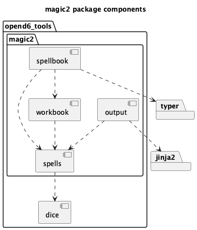
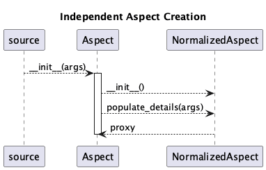
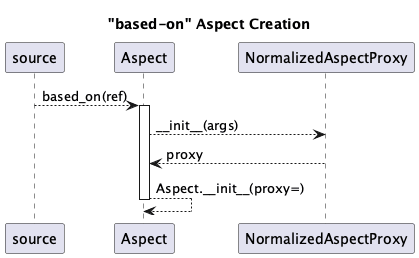
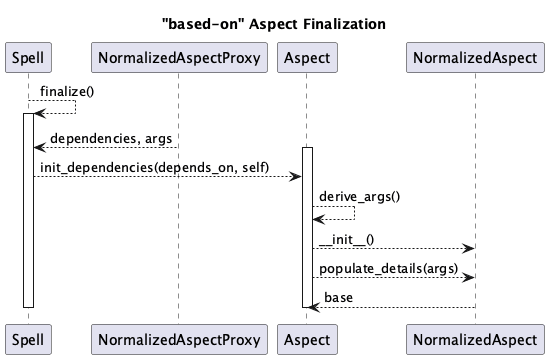
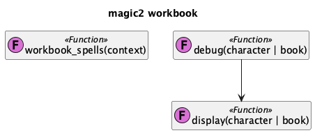

magic2 Package¶
The opend6_tools.magic2 package provides the DSL definitions for spells.
It also defines a small DSL for dice.
The package has a number of modules for creating formatted displays of spells, working with a spellbook as command-line application, and extracting definitions from a Jupyter Lab notebook.
Here’s an illustration of the structure of this package:

Defining Spells¶
The opend6_tools.magic2 package provides the definitions for the Spells DSL.
We’ll start by looking at the overall context in which spells are defined.
Then we can look at the details of how the Spell class is designed.
The DSL for spells creates Spell objects.
These objects can be collected into lists for validation and publication.
The publication pipeline relies on the make tool, which works with collections of individual files.
It helps to organize the spell definition into “spell books”: collections of spells with some organizing principle like a common skill or a common difficulty rank.
A software architect might call the module with these books an “aggregate root.”
Often, the spells are created interactively, using Jupyter Lab.
This means the opend6_tools.notebook_extract application will build the Python module from the notebook’s DSL statements.
For more information, see the notebook_extract app section.
The organization of spells.Spell objects with a spell definition module is a Python list object.
A book of spells is a list[Spell].
The following diagram illustrates this structure within the module.
![@startuml
'https://plantuml.com/class-diagram
title Spell Book overview
object "list[Spell]" as book
object Spell {
name: str
effect: Effect
duration: Aspect
range: Aspect
speed: Aspect
casting_time: Aspect
other_aspects: dict[str, Aspect]
other_conditions: list[Aspect]
}
book *-- "1..m" Spell
object Effect {
description
difficulty
}
Spell -- "1" Effect
object Aspect {
description
difficulty
}
Spell *-- "4..m" Aspect
object "~_~_test~_~_" as test
book <.. test
object generated_spellbook <<app>> {
display
debug
}
book <.. generated_spellbook
@enduml](../_images/plantuml-63214f5b12bfb1ada137cc97850b5d880e8a5a53.png)
Additionally, a module can also have a __test__ object to validate the spell’s have the expected difficulty, and an app object containing the top-level CLI applications.
There’s a Jupyter Lab notebook to help write the __test__ examples.
We’ll start by looking at the top-level class, spells.Spell.
The Spell Class¶
A Spell definition (as well as a Miracle and a Cantrip definition) is a collection of an Effect object and a number of distinct Aspect objects.
This structure is defined with the Spell DSL, a Python-based language that builds the required objects.
The rules state that a spell has eight characterstics. See CHARACTERISTICS OF A SPELL. Pragmatically, a spell is a bit more complicated.
Here’s the list of aspects from the rules:
- skill:
The essential skill used. Sometimes, this can be deduced from the effect. This is a string value.
- dificulty:
Computed from the effect and aspects.
- effect:
An instance of one of the
Effectsubclasses.- duration:
An instance of the
DurationAspectclass.- range:
An instance of the
RangeAspectclass.- speed:
An instance of the
SpeedAspectclass.- casting_time:
An instance of the
CastingTimeAspectclass.- other_aspects:
A mapping of aspect names to appropriate
Aspectsubclasses. This is formalized by theOtherAspectstyped dictionary definition.
Note that some of the Here’s a depiction of this essential structure, including some additional characterstics that are implied by the rules, but not stated.
![@startuml
'https://plantuml.com/class-diagram
title Spell class structure
class Spell {
name: str
effect: Effect
aspects: dict[str, Aspect]
other_aspects: dict[str, Aspect]
other_conditions: list[Aspect]
notes: str
skill: str
difficulty: int
source(): str
}
class Aspect {
incr_decr: Sign
base: NormalizedAspect
difficulty() -> Decimal
description() -> str
}
class NormalizedAspect {
sign: Sign
details : dict[type[Parser], list[DetailValue]]
notes: list[str]
difficulty() -> Decimal
description() -> str
}
class Effect
Aspect <|-- Effect
abstract class Parser {
parse(*args) -> DetailValue
}
Aspect *-- "1..p" Parser
class DetailValue
class Measure {
measure: Decimal
difficulty: Decimal
description: str
{static} m2v(int) -> Decimal
}
DetailValue <|-- Measure
class Modifier {
difficulty: Decimal
description: str
}
DetailValue <|-- Modifier
class Factor {
factor: Decimal
description: str
}
DetailValue <|-- Factor
Spell *-- "4" Aspect : aspects
Spell *-- "0..a" Aspect : other_aspects
Spell *-- "0..c" Aspect : other_conditions
Aspect *-- "1" NormalizedAspect
NormalizedAspect *-- "1..m" DetailValue
/'
class DurationAspect
class RangeAspect
class CastingTimeAspect
class SpeedAspect
Aspect <|--- DurationAspect
Aspect <|--- RangeAspect
Aspect <|--- CastingTimeAspect
Aspect <|--- SpeedAspect
'/
@enduml](../_images/plantuml-4828fb96641905a47de1f15a3cd441545c7915ef.png)
There are a lot of specializations of the Aspect class.
There are also a number of specializations of the Effect class.
What’s important is that each specialization has unique rules for the units of measure that are permitted for that aspect or effect.
The final difficulty computation is based on the difficulties of the individual Aspect and Effect instances associated with the Spell.
We’ll start with a formal definition of the algorithm
A spell, \(S\), is a set of attributes, \(a_x\). \(S = \{a_0, a_1, a_2, \dots, a_n\}\). There are a number of mandatory aspects, including the effect, and a number of optional aspects.
The \(\operatorname{sign}(a_x)\) extracts an algebraic sign for the aspect. The domain is two values; \(\operatorname{sign}(a_x) \in \{\texttt{Increase}, \texttt{Decrease}\}\).
The \(d(a_x)\) is the difficulty associated with the aspect. This is an unsigned number.
The overall difficulty of the spell, \(d(S)\) is based on two subsets of the aspects. Those aspects which increase the difficulty, \(I\), and those aspects which decrease the difficulty, \(D\).
The algorithm for the difficulty of a spell, \(d(S)\), is based on sum of the difficulties of each subset, \(I\) and \(D\).
This examines all of the Aspects of a Spell, including the Effect, the core Aspects, the Other Aspects and the Other Conditions.
It classifies each difficulty based on the enumerated value of the Sign.
It sums the difficulty of each aspect, \(d(a)\).
The rules name a Spell Total, \(I\), and Negative Modifiers, \(D\).
From this, the net difficulty for the spell is computed.
There are a number of possible Effects of a spell.
Effect Classes¶
There are nine essential Effect definitions.
These cover things like changing
a character’s attributes, skills, special abilities, or disadvantages.
Effects also include doing damage (and protecting from damage) are specialized combat-like
magical properties.
Further, a composite effect permits a single effect to have multiple constituent sub-effects. This allows spell to have dramatic results.
Here’s a depiction of the specialized Effects available.
![@startuml
'https://plantuml.com/class-diagram
'v3 of spell definitions
title Overview of Effect classes
interface IncreasesDifficulty
class Spell {
effect: Effect
}
class Aspect {
+ difficulty: int
+ description: str
- parser_cls: Parser
- comp_difficulty(NormalizedAspect) -> Decimal
- comp_description(NormalizedAspect) -> str
}
Spell *- Aspect
class NormalizedAspect {
details: dict[Parser, list[DetailValue]]
difficulty
description
}
Aspect *-- NormalizedAspect
class Parser {
parse(Args) -> DetailValue
}
Aspect o-- Parser
class Effect {
skill() -> str
}
IncreasesDifficulty <|--- Effect
Aspect <|-- Effect
abstract class MeasureEffect
Effect <|-- MeasureEffect
class DamageEffect
MeasureEffect <|-- DamageEffect
class ProtectionEffect
MeasureEffect <|-- ProtectionEffect
class SkillEffect
MeasureEffect <|-- SkillEffect
class AttributeEffect
MeasureEffect <|-- AttributeEffect
class SpecialAbilityEffect
Effect <|-- SpecialAbilityEffect
class DisadvantageEffect
Effect <|-- DisadvantageEffect
class TimeEffect
MeasureEffect <|-- TimeEffect
class DistanceEffect
MeasureEffect <|-- DistanceEffect
class MassEffect
MeasureEffect <|-- MassEffect
/'class VolumeEffect
MeasureEffect <|-- VolumeEffect
VolumeUnit <|--- VolumeEffect'/
class CompositeEffect
Effect <|-- CompositeEffect
CompositeEffect *-- "2..n" Effect
@enduml](../_images/plantuml-1fccbee191dbbcd466101db9dc3bfb74d2ece797.png)
All Effect classes have a number of common features:
They increase the difficulty of a spell.
They use one or more
Parserclasses to transform the given parameters into the detailedDetailValueobjects.They all have a difficulty and a description. These are computed by the underlying
NormalizedAspect. TheAspectmethods delegate the real work to aNormalizedAspect.
The Effect details differ om the ways the final difficulty is computed from the description. There are several steps in the difficulty and description processing:
An
Aspecthas a number ofParserreferences. EachParserattempts to extractDetailValueinstances from the text. Subclasses ofDetailValuearespells.Difficulty,spells.Measure,spells.Modifier, andspells.Factorclasses.The
DetailValueinstances are collected into theNormalizedAspectin a uniform structure.Each
Aspecthas defines methodsAspect.compute_difficuly()andAspect.compute_description()with the unique computations, based on theNormalizedAspectdetails.The final values for difficulty and description are cached in the
NormalizedAspectinstance. The public methods of theAspectclass then delegate the work to theNormalizedAspectinstance.
Since the effects are based on Aspect definitions, it makes sense to turn to Aspect definitions next.
Aspect Classes¶
The aspects are based on a hierarchy of classes, rooted at Aspect.
There are three groupings of Aspect subclasses:
The four core Aspects (duration, range, speed, and casting time.) Three of these increase the overall difficulty, while one –
CastingTimeAspectdecreases the overall difficulty.Most of the remaining aspects decrease the difficulty.
Any
Aspectin theother_aspectslist is will generally increase the difficulty.
First, the “Core Aspects”.
Most of these increase difficulty.
The exception is CastingTimeAspect.
![@startuml
'https://plantuml.com/class-diagram
title The Core Aspect classes
interface IncreasesDifficulty
interface DecreasesDifficulty
class Spell {
effect: Effect
aspects: dict[str, Aspect]
}
abstract class Aspect {
difficulty -> Decimal
description -> str
}
abstract class ParsedAspect
Aspect <|-- ParsedAspect
abstract class MeasureAspect
ParsedAspect <|-- MeasureAspect
class TimeAspect
MeasureAspect <|-- TimeAspect
TimeUnit --o TimeAspect
abstract class DistanceAspect
MeasureAspect <|-- DistanceAspect
DistUnit --o DistanceAspect
class RangeAspect
DistanceAspect <|-- RangeAspect
IncreasesDifficulty <|-- RangeAspect
class SpeedAspect
DistanceAspect <|-- SpeedAspect
IncreasesDifficulty <|-- SpeedAspect
class DurationAspect
TimeAspect <|-- DurationAspect
IncreasesDifficulty <|-- DurationAspect
class CastingTimeAspect
TimeAspect <|-- CastingTimeAspect
DecreasesDifficulty <|-- CastingTimeAspect
Spell *--- DurationAspect
Spell *--- RangeAspect
Spell *--- SpeedAspect
Spell *--- CastingTimeAspect
@enduml](../_images/plantuml-0d59e1279162b52927d78b570d21c4e3108c487b.png)
These four core aspects are required for every Spell. In addition to those, there are “Other Aspects” that will increase the difficulty of a spell.
![@startuml
'https://plantuml.com/class-diagram
title Aspects that Increase Difficulty
interface IncreasesDifficulty
'interface DecreasesDifficulty
abstract class Aspect {
difficulty -> Decimal
description -> str
}
abstract class ParsedAspect
Aspect <|-- ParsedAspect
abstract class MeasureAspect
ParsedAspect <|-- MeasureAspect
/' abstract class TimeAspect
Aspect <|-- TimeAspect
TimeUnit <|-- TimeAspect
'/
/' abstract class DistanceAspect
Aspect <|-- DistanceAspect
DistUnit <|-- DistanceAspect
'/
class AreaEffectAspect
AreaEffectAspect --|> IncreasesDifficulty
MeasureAspect <|-- AreaEffectAspect
class ChangeTargetAspect
ChangeTargetAspect --|> IncreasesDifficulty
ParsedAspect <|-- ChangeTargetAspect
class ChargesAspect
ChargesAspect --|> IncreasesDifficulty
ParsedAspect <|-- ChargesAspect
'Community
'Component
'Concentration
'Countenance
'Feedback
class FocusedAspect
FocusedAspect --|> IncreasesDifficulty
Aspect <|-- FocusedAspect
'Gestures
'Incantations
class MultipleTargetAspect
MultipleTargetAspect --|> IncreasesDifficulty
ParsedAspect <|-- MultipleTargetAspect
'UnrealEffect
class VariableDurationAspect
VariableDurationAspect --|> IncreasesDifficulty
ParsedAspect <|-- VariableDurationAspect
class VariableEffectAspect
VariableEffectAspect --|> IncreasesDifficulty
Aspect <|-- VariableEffectAspect
class VariableMovementAspect
IncreasesDifficulty <|--- VariableMovementAspect
ParsedAspect <|-- VariableMovementAspect
class ArcaneKnowledgeAspect
Aspect <|-- ArcaneKnowledgeAspect
@enduml](../_images/plantuml-17f2928ec2a58335030a30931436231fe6f0a242.png)
There is little commonality among these aspects of a spell.
These are the “Other Aspects” that will decrease the difficulty of a spell.
![@startuml
'https://plantuml.com/class-diagram
title Aspects that Decrease Difficulty
' interface IncreasesDifficulty
interface DecreasesDifficulty
abstract class Aspect {
difficulty -> Decimal
description -> str
}
abstract class ParsedAspect
Aspect <|-- ParsedAspect
abstract class MeasureAspect
ParsedAspect <|-- MeasureAspect
class TimeAspect
MeasureAspect <|-- TimeAspect
class GenericAspect
Aspect <|-- GenericAspect
GenericAspect --|> DecreasesDifficulty
class CommunityAspect
ParsedAspect <|-- CommunityAspect
CommunityAspect ---|> DecreasesDifficulty
class ComponentsAspect
ParsedAspect <|-- ComponentsAspect
ComponentsAspect ---|> DecreasesDifficulty
class ConcentrationAspect
TimeAspect <|-- ConcentrationAspect
ConcentrationAspect ---|> DecreasesDifficulty
class CountenanceAspect
ParsedAspect <|-- CountenanceAspect
CountenanceAspect ---|> DecreasesDifficulty
class FeedbackAspect
Aspect <|-- FeedbackAspect
FeedbackAspect ---|> DecreasesDifficulty
class GesturesAspect
ParsedAspect <|-- GesturesAspect
GesturesAspect ---|> DecreasesDifficulty
class IncantationsAspect
ParsedAspect <|-- IncantationsAspect
IncantationsAspect ---|> DecreasesDifficulty
class UnrealEffectAspect
Aspect <|-- UnrealEffectAspect
UnrealEffectAspect ---|> DecreasesDifficulty
@enduml](../_images/plantuml-7b3f148777083a8d4d208d7441814d39594dbb0b.png)
There is little commonality among these aspects of a spell, outside their contribution to decreasing the overall difficulty of the spell.
Aspect Creation¶
The Aspect base class is a wrapper that contains
the unique features of an aspect.
Here’s a summary that applies to many Aspect definitions:
The computation for difficulty for this type of aspect.
The computation for descriptive text for this type of aspect.
A collection of
Parserreferences to parse Measure, Modifier, and Factor values.A
NormalizedAspectobject with theDetailValueobjects created during the parsing operation. These values are input to the difficulty and description computations.
The following diagram shows the typical set of relationships for those aspects that are not based on other aspects.
![@startuml
'https://plantuml.com/class-diagram
title Common Aspect structure
class Aspect {
origin: ""tuple[class, args, kwargs]""
base: NormalizedAspect
__init__(*args) -> None
compute_diff(Aspect) -> Decimal
compute_descr(Aspect) -> str
}
class NormalizedAspect {
aspect: ""Aspect""
details: ""dict[type[Parser], list[DetailValue]]""
notes: ""list[str]""
populate_details(parsers, args) -> Self
difficulty() -> Decimal
description() -> str
}
Aspect *-- NormalizedAspect : base
NormalizedAspect -[dotted]-> Aspect : "<<weakref>>\naspect"
abstract class Parser {
{abstract} parse(*args) -> DetailValue
}
Aspect *-- "1, m" Parser
class Effect
Aspect <|-- Effect
@enduml](../_images/plantuml-b36ea1d8f489b6656015e9dec0f14cbdd0057711.png)
There are three ways to create an Aspect.
Directly, with a stand-alone, or independent set of argument values.
Indirectly, or “based-on” one or more other aspects. In this case, the aspect’s details depend on details of other aspects of the containing
Spell. Commonly, the speed aspect of a spell is based on the range aspect to create an instantaneous effect. There are three other common examples: Concentration, Focus, and Unreal Effect aspects.Copied from another Spell. This spell is a template, with details provided by some other spell.
This expands the definition of the Aspect class to include proxies and references.
These are used as part of a two-step computation of the final value of the NormalizedAspect.
Here’s the expanded view of an Aspect.
![@startuml
'https://plantuml.com/class-diagram
title Expanded Aspect structure
class Aspect {
base: NormalizedAspect
proxy: NormalizedAspectProxy
reference: NormalizedAspectReference
__init__(*args) -> None
compute_diff(Aspect) -> Decimal
compute_descr(Aspect) -> str
}
class NormalizedAspect {
details: ""dict[type[Parser], list[DetailValue]]""
notes: ""list[str]""
aspect: ""Aspect""
populate_details(parsers, args) -> Self
difficulty() -> Decimal
description() -> str
}
Aspect *-- "0..1" NormalizedAspect : base
class NormalizedAspectProxy {
attr_paths: list[str]
}
Aspect *-- "0..1" NormalizedAspectProxy : proxy
class NormalizedAspectReference {
attr_path: str
}
Aspect *-- "0..1" NormalizedAspectReference : reference
NormalizedAspect -[dotted]-> Aspect : "<<weakref>>\naspect"
abstract class Parser {
{abstract} parse(*args) -> DetailValue
}
Aspect *--- "1, m" Parser
@enduml](../_images/plantuml-5b44712bedb300367e351b25cc8122ffb4a65ff3.png)
The indirect creation of a NormalizedAspect based on a NormalizedAspectProxy happens in two phases:
Initialization of the proxy, via
Aspect.based_on(). This creates a instance of theAspectwith a proxy that will be supplemented with aNormalizedAspectduring finalization.Finalization happens at the end of spell creation, via the
Spell.finalize()method. This will invokeAspect.init_dependencies()to build the dependentNormalizedAspectinstances based on other aspects of theSpell.
The finalization leads to a state change in the Aspect. It starts with a proxy and no base. It ends with both a proxy and a base. Here’s an illustration of this change:
![@startuml
'https://plantuml.com/state-diagram
title Aspect state transition
[*] --> proxy : ""Aspect.based_on()""\n""Aspect.~_~_init__(proxy=)""
[*] --> finalized : ""Aspect.~_~_init__()""
proxy --> finalized : ""Spell.finalize()""\n""Aspect.init_dependencies()""
finalized --> [*]
proxy : proxy: ""NormalizedAspectProxy""
proxy : base: ""None""
finalized : proxy: ""NormalizedAspectProxy | None""
finalized : base: ""NormalizedAspect""
@enduml](../_images/plantuml-0f3b0921f75f801f600a278cfc44ddf38422dc36.png)
On the left side, a “based-on” Aspect creates a proxy. During finalization, a proper normalized aspect is created.
On the right side, an independent Aspect creates a normalized aspect directly. During finaization, there’s no change.
Most spells are self-contained. In the rare case of a “based-on-spell” relationship, finalization can’t be completed until the template is shaped by a spell from which it can copy the aspect details.
For most spells, the initial creation has the following sequence of interactions:

The initialiation of the NormalizedAspect is broken into two explicit steps to permit easier extension to the process for more complicated relationships.
For a “based-on” Aspect, processing breaks into two phases. Here’s the first portion:

The Spell.finalize() method sets the
Aspect.base to a NormalizedAspect object
using the Aspect.init_dependencies method.

The Spell doesn’t have any proper state change.
The based-on Aspect undergoes the state change.
The Aspect class definition provides
the computation for creating the arguments from the dependencies.
A Aspect.derive_args() method builds the argument values required to create the dependent NormalizedAspect.
The state definitions involve three, distinct attributes, base, proxy, and reference.
There are three states of being for these attributes:
base is not None. This is a finalizedAspect; all details are present.base is None and proxy is not None. This is a proxy, waiting to be finalized.base is None and reference is not None. This is a reference to another spell. This spell is a template, waiting to the shaped by another spell.
An important consequence of this is the possibility of spelling mistakes in the aspect references. The “based-on” aspect name is a string; if this doesn’t match an actual attribute, finalization can’t be completed.
These Aspect definitions are based on a number of foundational definitions.
Foundational Definitions¶
These are classes for the atomic attributes of an Aspect or Effect.
We’ll look at the DetailValue classes, and the DifficultyAdjustment classes.
We’ll also look at the Parser hierarchy.
We’ll conclude with the AreaVolumeUnit parser, which is rather complicated.
There are three kinds of DetailValue classes which hold the results of parsing the argument values to an Aspect or Effeect.

The spells.m2v() computation converts
measures (in KMS) units to difficulty values.
Where \(\rceil_{u}\) uses decimal.ROUND_UP,
and \(\rceil\) uses decimal.ROUND_HALF_UP.
The effects describe what the spell does. These contribute to the overall difficulty. The remaining aspects may add to or reduce the overall difficulty.
First, the ubiquitous mixin class definitions to increase or decrease the difficulty. Each of these adds a single attribute value to a class definition.
![@startuml
'https://plantuml.com/class-diagram
title DifficultyAdjustment Definitions
enum Sign {
Increase
Decrease
}
interface DifficultyAdjustment {
incr_decr: Sign
}
class IncreasesDifficulty {
incr_decr = Sign.Increase
}
class DecreasesDifficulty {
incr_decr = Sign.Decrease
}
DifficultyAdjustment <|-- IncreasesDifficulty
DifficultyAdjustment <|-- DecreasesDifficulty
Sign --- IncreasesDifficulty
Sign --- DecreasesDifficulty
class Aspect
class Effect
IncreasesDifficulty <|-- Effect
IncreasesDifficulty <|-- Aspect
DecreasesDifficulty <|-- Aspect
@enduml](../_images/plantuml-d2fdca3fdcea6cfc52dd841a7f7a1722b736c419.png)
The Spell.finalize() method makes use of these objects to compute the final difficulty.
The incr_decr attribute partitions the various Aspect into increase and decrease buckets.
Here are some additional foundational class definitions.
![@startuml
'https://plantuml.com/class-diagram
title Some elements of the Parser structure
class Parser {
parse(args) -> DetailValue
}
class Lookup
Parser <|-- Lookup
class QualifiedLookup
Lookup <|-- QualifiedLookup
class Unit
Parser <|-- Unit
enum Time
class TimeUnit
Unit <|-- TimeUnit
TimeUnit --> Time
enum Mass
class MassUnit
Unit <|-- MassUnit
MassUnit --> Mass
enum Distance
class DistUnit
Unit <|-- DistUnit
DistUnit --> Distance
enum Volume
class VolumeUnit
Unit <|-- VolumeUnit
VolumeUnit --> Volume
class AreaVolumeUnit
Unit <|-- AreaVolumeUnit
class DieCode
class DiceUnit
Unit <|-- DiceUnit
DiceUnit --> DieCode
@enduml](../_images/plantuml-cf9567eeb6cca17c5097fa44b08603535710493b.png)
Many of the Unit parsers work with measures (kilogram, meter, second-based).
The results are Measure objects with a conversion to a difficulty-related value.
The DiceUnit parser result is a Modifier.
This value is already difficulty-related.
A number of specializations of Lookup and QualifiedLookup produce Factor objects.
This is a dimensionless multiplier applied to a difficulty modifier or the value created from a measure.
Unit Parsing¶
The Measures have specific Units for mass, distance, and time. A little-used unit of volume is also present. These are based on kilograms, meters, and seconds. In addition, there are two more units that are similar, but don’t deal with physical units.
These measures are part of a number of Aspects.
They also figure into many of the Effects.
There are two distinct ways to make use of a Unit.
Provide a string, for example: “40m” to set a distance of 42 meters.
Provide a number and a value from the unit enumeration. For example:
40, Distance.m.
The DieUnit doesn’t have a Kilogram-Meter-Second physical unit, but instead has values that can be provided two ways.
As a string, using
nD+ppattern, for example,"3D+2".Using the DieCode DSL. For example
3*D+2. This value is not a String.
The spells.AreaVolumeUnit parsing handles a mixture
of area and volume specifications used for spells.AreaEffectAspect, the Area of Effect aspect.
This has a simple grammar defined as follows:
shape_spec ::= dimension+ SHAPE dimension ::= NUMBER UNIT AXIS | AXIS | NUMBER UNIT
This is based on a number of terminal tokens:
WHITESPACE ::= ' ' | 'and' NUMBER ::= DIGIT+ UNIT ::= 'm' | 'meter' | 'meters' AXIS ::= 'radius' | 'length' | 'base' | 'height' | 'width' | 'depth' SHAPE ::= 'circle' | 'sphere' | 'hemisphere' | 'cone' | 'wall | 'cuboid' | 'divination sphere'
The parser is a bit more complicated than others.
![@startuml
'https://plantuml.com/class-diagram
title The AreaVolumeUnit parser structure
class Unit {
parse(args) -> DetailValue
}
class AreaVolumeUnit {
parse(args) -> DetailValue
parse_str(str) -> (Decimal, Str)
raw_tokens(str) -> Iterator[Token]
parse_shape_spec(Tokenizer) -> ShapeSpace
parse_dimension(Tokenizer) -> ShapeSpace
axis_expansion(ShapeSpace) -> dict[str, Decimal]
shape_difficulty(ShapeSpace) -> (Decimal, str)
}
Unit <|-- AreaVolumeUnit
class Token
AreaVolumeUnit ..> Token : Creates
class Number
Token <|-- Number
class Shape
Token <|-- Shape
class UnitName
Token <|-- UnitName
class Axis
Token <|-- Axis
class Tokenizer {
next() -> Token
unget() -> None
}
Tokenizer o-- Token : Iterates Over
AreaVolumeUnit *-- Tokenizer
class Dimension {
distance: Decimal
unit: str
axis: str
}
class ShapeSpec {
shape_name: str
axes: list[Dimension]
}
ShapeSpec *-- Dimension
AreaVolumeUnit ..> ShapeSpec : Creates
AreaVolumeUnit ..> Dimension : Creates
@enduml](../_images/plantuml-3daaa3f727417cf4174157b8b4f87f52d5e26ded.png)
A very few spells reference Volume. This is typically cubic meters, to remain consistent with other measures. A liter is \(\frac{1}{100}\) of a cubic meter.
The relationship between the spells.Spell, and the spells.Aspect is a container. The Spell contains a number of Aspects.
The various spells.Parser and spells.Unit classes define the details of how the aspect’s descriptions are parsed.
Display and Output¶
The opend6_tools.magic2.output module performs a number of output conversions for spells and items.
![@startuml
'https://plantuml.com/class-diagram
title magic2.output module
class TableSummary {
spell_csv(Spell) -> tuple
item_csv(Item) -> tuple
}
class "summary(book)" as summary << (F,orchid) Function >>
hide summary empty members
summary --> TableSummary
class "item_summary(book)" as item_summary << (F,orchid) Function >>
hide item_summary empty members
item_summary --> TableSummary
class SpellWriter {
base_template: str
list_template: str
dict_template: str
report(spell | book) -> str
}
class ItemWriter
SpellWriter <|-- ItemWriter
class "detail(spell | book)" as detail << (F,orchid) Function >>
hide detail empty members
detail --> ItemWriter
detail --> SpellWriter
@enduml](../_images/plantuml-ab6a5156156adb4fcc178da59a8167714193b192.png)
This module has three conceptual features:
Writing CSV table summaries.
Writing RST-format details for publication.
Writing display output to help understand the difficulty computed for a Spell or Item.
These output features are used by the applications that are part of the magic2.spellbook module, described later.
First, however, we’ll look at the features that extract Spell and Item definitions from a Jupyter Lab Notebook.
Workbook Support¶
This module has a few functions for extracting spells from a Jupyter Lab Notebook.
Generally, these functions are designed to be part of a notebook, and introspect the notebook by looking at the globals() mapping.

The Spellbook Wrapper¶
This module has a few functions to build elements of a spellbook application.
These functions serve to create a CLI application using the typer library.
Generally, these are used as follows:
from opend6_tools.magic2 import *
# Spell or Item definitions
spells = [...]
if __name__ == "__main__":
app = build_app(spells)
app()
This will – when run from the command line – build the application around spells (or items) defined in the module.
It will then launch the application.
This will parse command-line parameters and execute one various alternative sub-commands: test, debug, or display.
Implementation¶
A DSL for defining Spells, Invocations, Cantrips, and Items.
There are four modules in this package:
Generally, this is imported using from opend6_tools.magic2 import *.
The spells module¶
Core definitions for spells.
A Spell is a collection of an :py:class:Effect`,
and a number of individual Aspect details.
Example¶
>>> from opend6_tools.magic2 import *
>>> example = Spell(
... name="Example",
... notes="Mage waves their hands and says the words",
... effect=SkillEffect("Acumen: testing", "+4D"),
... duration=DurationAspect("1 sec"),
... range=RangeAspect("1m"),
... casting_time=CastingTimeAspect("5 sec"),
... speed=SpeedAspect.based_on("range", "Instantaneous"),
... other_aspects = {},
... other_conditions = [GenericAspect(1, "Everything else is completed")],
... )
>>> example.difficulty
4
>>> detail(example)
Example
~~~~~~~
:Skill: Acumen: testing
:Difficulty: 4
:Effect: 12 (Acumen: testing 4*D)
:Range: 1 m \(0)
:Speed: Instantaneous \(0)
:Duration: 1 sec \(0)
:Casting Time: 5 sec \(4)
:Other Conditions:
(1): Everything else is completed
Mage waves their hands and says the words
Spell, Cantrip, Miracle¶
- class opend6_tools.magic2.spells.Spell(*, name: str, effect: Effect, **aspects: Aspect | OtherAspects | list[Aspect])[source]¶
Definition of a spell: an Effect and a collection of Aspects.
Per the rules, a spell has 8 characterstics. See CHARACTERISTICS OF A SPELL. This isn’t enough for a complete data model, but it does help clarify intent. These are the charactestics defined in the rules:
- Skill:
The essential skill used. Sometimes, this can be deduced from the effect.
- Dificulty:
Computed from the effect and aspects.
- Effect:
An instance of one of the
Effectsubclasses.- Duration:
An instance of the
DurationAspectclass.- Range:
An instance of the
RangeAspectclass.- Speed:
An instance of the
SpeedAspectclass.- Casting_time:
An instance of the
CastingTimeAspectclass.- Other_aspects:
A mapping of aspect names to one of the
Aspectsubclasses. Ideally, an instance of theOtherAspectstyped dictionary.
This implementation adds three more essential characteristics, not named in the rules:
- Name:
String
- Notes:
String
- Other_conditions:
A list of
GenericAspectinstances with additional details.
Example
>>> from opend6_tools.magic2 import *
>>> example = Spell( ... name="Example", ... notes="GIVEN Example spell WHEN difficulty THEN 4", ... effect=SkillEffect("Acumen: testing", "+4D"), ... duration=DurationAspect("1 sec"), ... range=RangeAspect("1m"), ... casting_time=CastingTimeAspect("5 sec"), ... speed=SpeedAspect.based_on("range", description="Instantaneous"), ... other_aspects = {}, ... other_conditions = [GenericAspect(1, "Everything else is completed")], ... ) >>> example.difficulty 4
Most Spells are self-contained. The
Effectand eachAspecthave a distinct difficulty computation.There are two complications:
Some
Aspectmay depend on one or more otherAspectdefinitions (or theEffect) of this Spell instance.Spells an
EffectorAspectthat depends on another Spell (or a creature or a thing.) This based_on_spell() feature is a bit more complicated.
It helps to treat dependency as the base case, and a self-contained Aspect as well as an entirely self-contained Spell as a kind of degenerate case.
Example of an attribute, speed, based_on range:
>>> sleep = Spell( ... name="Sleep", ... skill="Temperamental Alteration", ... notes="Physique, Coordination, Acumen, and Intellect are (temporarily) reduced, leading to fatique", ... effect=DisadvantageEffect("Narcolepsy", 4, "-4D to mental and physical attributes"), ... duration=DurationAspect(measure="1 hr"), ... range=RangeAspect(measure="20 m"), ... casting_time=CastingTimeAspect(measure="5 sec"), ... speed=SpeedAspect.based_on(("range",), ""), ... other_aspects={ ... "incantation": IncantationsAspect("Control Chant", "litany"), ... }, ... other_conditions=[ ... GenericAspect(difficulty=0, description="Controller: Folme Agility") ... ], ... ) >>> sleep.range.difficulty() Decimal('7') >>> sleep.speed.difficulty() Decimal('7')
A more complex example of a template spell. This is based on another spell’s duration. A special
finalize()is used to extract missing details from another spell to fine-tune thecast_chaosspell.>>> cast_chaos = Spell( ... name="Cast Chaos", ... skill="Conjuration", ... notes="Simulate another spell, may work...", ... effect=GenericEffect(description="Spell being copied plus backlash", difficulty=30), ... duration=DurationAspect.based_on_spell("duration"), ... )
>>> s1 = Spell( ... name="Some Actual Spell", ... effect=DamageEffect("3D", "physical"), ... duration=DurationAspect("1hr"), ... )
>>> cast_chaos.finalize(spell=s1) >>> cast_chaos.duration.difficulty() Decimal('18') >>> cast_chaos.duration.description() '1 hr' >>> cast_chaos.duration.base NormalizedAspect(DurationAspect('1hr'))
There are two distinct ways to define these dependencies:
Use an Aspect’s
Aspect.based_on()class method to get the difficulty from aspects or effect of this spell.Use an Aspect’s
Aspect.based_on_spell()to get one or more attribute difficulties (or effect difficulty or overall difficulty) from another spell.
Note
Finalization Details
Generally, the
Spell.finalize()method works out the internal dependency total order. It must also be given any external values (i.e. Spells or whatever) required to create the effect and aspects.- finalize(spell: Spell | None = None) None[source]¶
Assign all aspects to visible attribute names. Also, compute any required
based_onAspect values.The “based on” Aspects depend on various independent Aspects of a spell, including the Effect, and possibly modifiers and factors.
The order of operations is a topological sort of defined aspects.
All dependent aspects are then computed from the independent aspects.
Important
No based-on-spell references
If there are any references, finalization is delayed until after the
shape()method.
- shape(other_spell: Spell, references: dict[str, Aspect]) None[source]¶
Copy Aspects from another spell into this spell.
- property difficulty: int¶
Compute Difficulty.
Aspects and Effects¶
The base class for all aspects and effects.
- class opend6_tools.magic2.spells.Aspect(difficulty: Any, description: Any, *, proxy: NormalizedAspectProxy | NormalizedAspectReference | None = None, **kwargs: Any)[source]¶
Abstract Base Class for all Aspects and Effects.
An
Aspectdefines Aspect-specific methods and detail parsers. It contains aNormalizedAspectwith the elaborated details of the Aspect.Each subclass of Aspect (and Effect) has a unique mix of parameter definitions.
The base class can be initialized with a pre-computed difficulty.
Additionally, a few aspect classes can have difficulties based on other aspects of a Spell. In this case, the parsing and finalization must be deferred until the Spell is finalized. A
NormalizedAspectProxyis used to hold details of the dependency relationship.Some Spells are “templates” and require details copied from another spell. In this case, an aspect will have a
NormalizedAspectReferenceto hold this dependency relationship.- base: NormalizedAspect | None¶
Finalized details of this aspect.
- classmethod based_on(attr_paths: str | tuple[str, ...], *measures: Any, **kwargs: Any) Aspect[source]¶
Defines an Aspect with a difficulty based on another Aspect. The independent Aspect may not have been computed yet. Computation is delayed until
Spell.finalize().Cases:
SpeedAspect.based_on("range", description="Instantaneous")The speed is given as a distance measure, implicitly per-second. The speed distance measure needs to be copied from the range distance measure.ConcentrationAspect.based_on("casting_time"). The concentration time measure needs to be copied from the casting_time time measure.FocusedAspect.based_on(("effect", "duration"))The focus difficulty is based on (effect.difficulty + duration.difficulty)/5. There’s no measure, modifier, or factor for this.UnrealEffectAspect.based_on("effect", "difficulty 9")The unreal effect difficulty is based on effect.difficulty * factor. This involves a mixture of the effect difficulty and a parsed factor value. This is perhaps the most complicated.
- classmethod based_on_spell(attr_path: str) Aspect[source]¶
Defines an Aspect that must be copied from another Spell.
The
shaped_by(spell)method will copy NormalizedAspects from the spell on which this depends. After the aspects are copied, the spell can be finalized.
- derive_args() tuple[tuple[Any, ...], dict[str, Any]][source]¶
Compute arguments for a “based_on” definitions.
This requires the
NormalizedAspectProxy.get_dependencieshas interrogated the containingSpellto get the definitions.This generic implementation copies the independent aspect’s measure argument to create the based-on measure arguments.
- init_dependencies(proxy: NormalizedAspectProxy) Self[source]¶
Build an
NormalizedAspectfrom aNormalizedAspectProxy. The proxy was created by thebased_on()method. It was then updated by theNormalizedAspectProxy.set_dependencies()method.The Aspect-specific
derive_argsmethod compute the argument values used to build the finalNormalizedAspect.
- property is_dependent: bool¶
Depends on something else, derived, and base has not been computed yet.
- property is_reference: bool¶
Depends on an aspect of a different spell and base has not been copied yet.
- normalize_aspect(*args: Any, **kwargs: Any) NormalizedAspect[source]¶
Default normalization process: populate the details from the Aspect’s parsers.
- proxy: NormalizedAspectProxy | None¶
Aspect depends on another aspect of this spell.
- reference: NormalizedAspectReference | None¶
Aspect depends on an aspect of another spell.
- class opend6_tools.magic2.spells.OtherAspects[source]¶
A typed dictionary that provides a list of key names for the
Spell.other_aspectsmapping.Note, numerous aliases are present. This makes it slightly easier to convert text to a Spell. It also leads to some minor inconsistencies.
(See OPTIONAL ASPECTS.)
- arcane_knowledge: ArcaneKnowledgeAspect¶
- area_effect: AreaEffectAspect¶
- area_of_effect: AreaEffectAspect¶
- change_target: ChangeTargetAspect¶
- charges: ChargesAspect¶
- community: CommunityAspect¶
- component: ComponentsAspect¶
- components: ComponentsAspect¶
- concentration: ConcentrationAspect¶
- countenance: CountenanceAspect¶
- feedback: FeedbackAspect¶
- focus: FocusedAspect¶
- focused: FocusedAspect¶
- gesture: GesturesAspect¶
- gestures: GesturesAspect¶
- incantation: IncantationsAspect¶
- incantations: IncantationsAspect¶
- multi_target: MultipleTargetAspect¶
- multiple_targets: MultipleTargetAspect¶
- other_alterant: GenericAspect¶
- other_alterants: GenericAspect¶
- unreal_effect: UnrealEffectAspect¶
- variable_duration: VariableDurationAspect¶
- variable_effect: VariableEffectAspect¶
- variable_movement: VariableMovementAspect¶
Effects¶
There are a number of effects, all derived from Effect.
- class opend6_tools.magic2.spells.Effect(description: Any, difficulty: Any = 1, **kwargs: Any)[source]¶
An extension to the Aspect class to define the spell’s Effect.
Important
Description and Difficulty argument order
The description and difficulty for some
Effectclasses are generally reversed from the order defined forAspect. This follows the style of the published rules, which reversed Effect and Aspect displays.This class is abstract, and lacks a
normalize_order()method. TheGenericEffectsubclass is concrete, with order-swapping for the argument values.
- class opend6_tools.magic2.spells.CharacteristicType(*values)[source]¶
The “Characteristic Type” factors from the Die Codes sidebar. (See Characteristic Type.)
Stand-alone stun damage (physical only)
0.75
Stand-alone damage*
1
Stand-alone protection*
1
Protection or damage modifier*
1.5
Stand-alone die code or non-Extranormal skill
1
Non-Extranormal skill modifier
1.5
Stand-alone non-Extranormal attribute
1.5
Non-Extranormal attribute modifier
2
Stand-alone Extranormal skill
2
Extranormal skill modifier
2.5
Extranormal attribute modifier
3
* To protect against or do damage as both mental and physical, each type, purchase each one separately.
Note: To have damage ignore non-magical armor, add 0.5 to the value multiplier listed. To have protection against either magical or non-magical attacks (but not both), subtract 0.5 from the value multiplier listed.
Also, see NOTE ON ATTACK & PROTECTION SPELLS.
By default, magical and nonmagical armor can defend against attack spells. To ignore nonmagical armor, double the value to add it. Damage is either physical or mental. To do both, each kind must be purchased separately.
Similarly, protection spells defend against both magical and nonmagical attacks. To be subject to one but not the other, half the value to add it (round up). The protection may be against physical or mental attacks. To resist both, each kind must be purchased separately.
Note
When multiple factors are present, the largest is used for difficulty computations.
Note
Spelling aliases are preserved, not collapsed into a canonical form.
- attribute = 13¶
- attribute_modifier = 14¶
- damage_modifier = 5¶
- extranormal_attribute_modifier = 17¶
- extranormal_skill = 15¶
- extranormal_skill_modifier = 16¶
- ignore_all_armor = 9¶
- ignore_nonmagical_armor = 7¶
- ignores_all_armor = 10¶
- ignores_nonmagical_armor = 8¶
- mental_damage = 4¶
- only_effects_attack_spells = 6¶
- physical_damage = 3¶
- protection_modifier = 2¶
- skill = 11¶
- skill_modifier = 12¶
- stun_only = 1¶
- class opend6_tools.magic2.spells.CharacteristicFactor[source]¶
Maps a
CharacteristicTypeand to aFactor.>>> from opend6_tools.magic2.spells import CharacteristicFactor >>> cf = CharacteristicFactor() >>> cf.parse("ignore all armor") Factor(factor=Decimal('2'), description='ignore_all_armor') >>> cf.parse("extranormal_skill_modifier") Factor(factor=Decimal('2.5'), description='extranormal_skill_modifier') >>> cf.parse(CharacteristicType.extranormal_skill_modifier) Factor(factor=Decimal('2.5'), description='extranormal_skill_modifier')
- choices¶
alias of
CharacteristicType
- cutoff: float = 0.8¶
MeasureEffect¶
- class opend6_tools.magic2.spells.MeasureEffect(*args: Any)[source]¶
Bases:
GenericDifficultyDescription,Effect,GenericGeneric Class for all measure-based effects.
Requires a specific subclass of
Unitto provide a parser for measures.DiceUnitprovides aModifierwith the difficulty provided directly. Most others provide aMeasurewith a measure-to-value conversion to get a difficulty.- compute_description(aspect: NormalizedAspect) str[source]¶
- compute_difficulty(aspect: NormalizedAspect) Decimal[source]¶
- factor_adj_cls¶
alias of
CharacteristicFactorAdjustment
- factor_cls¶
alias of
CharacteristicFactor
- logger: Logger = <Logger MeasureEffect (WARNING)>¶
VolumeEffect¶
- class opend6_tools.magic2.spells.VolumeEffect(*args: Any)[source]¶
Bases:
MeasureEffect[VolumeUnit]An Effect of a Spell or Miracle based on volume.
This may be a superfluous addition. All examples of this are – perhaps – better described with Area Effect: Odd Shapes.
>>> vol = VolumeEffect("Creates", "100 liters") >>> vol.difficulty() Decimal('10') >>> vol.description() 'Creates 100 liter' >>> vol.incr_decr <Sign.Increase: 1> >>> vol.source() "VolumeEffect('Creates', '100 liters')"
- measure_cls¶
alias of
VolumeUnit
CompositeEffect¶
- class opend6_tools.magic2.spells.CompositeEffect(summary: str, *effects: Effect, modifications: Limitation | Enhancement | list[Limitation | Enhancement] | None = None)[source]¶
Bases:
EffectCombines two or more
Effectinstances. All the Effects must be a subclass ofIncreasesDifficulty.Rules:
A spell may contain more than one effect. Each effect is determined separately and added to the total. All of the effects must fall under the domain of the same skill. You should also list the skill used to cast the spell at this time. See the “Skills and Sample Effects” sidebar for suggestions.
>>> e_1 = SkillEffect("Coordination: marksmanship", "+2D") >>> e_1.description() 'Coordination: marksmanship 2*D' >>> e_2 = DamageEffect("Damage", "2*D") >>> e_2.description() 'Damage 2*D' >>> composite = CompositeEffect("Magic Bullet", e_1, e_2) >>> composite.difficulty() Decimal('12') >>> composite.description() 'Magic Bullet: Coordination: marksmanship 2*D; Damage 2*D' >>> composite.incr_decr <Sign.Increase: 1> >>> composite.source() "CompositeEffect('Magic Bullet', SkillEffect('Coordination: marksmanship', '+2D'), DamageEffect('Damage', '2*D'))"
>>> composite_mod = CompositeEffect("Magic Bullet", e_1, e_2, modifications=Limitation("Side Effect", 2)) >>> composite_mod.difficulty() Decimal('12') >>> composite_mod.description() 'Magic Bullet: Coordination: marksmanship 2*D; Damage 2*D; all with side_effect (R2)'
- compute_description(aspect: NormalizedAspect) str[source]¶
Join of component descriptions and any modifications.
- compute_difficulty(aspect: NormalizedAspect) Decimal[source]¶
Sum of component difficulties.
DamageEffect¶
- class opend6_tools.magic2.spells.DamageEffect(*args: Any)[source]¶
An Effect of a Spell or Miracle that does damage. The units are generally
DieCodevalues or strings.(See EFFECT & SKILL USED.)
Rules:
Damage spells affect character health (that is, their Body Points or Wounds). To hurt someone, 6D (which you can determine, by using the “Die Code” table, has a value of 18) is a safe bet. To kill someone outright, 10D (which has a value of 30) is usually necessary.
Both protection and damage have a visible component (such as a glowing aura) that indicates their use and, if relevant, trajectory.
>>> damage = DamageEffect("Body damage", "+4D+1") >>> damage.difficulty() Decimal('13') >>> damage.description() 'Body damage 4*D+1' >>> damage.incr_decr <Sign.Increase: 1> >>> damage.source() "DamageEffect('Body damage', '+4D+1')"
>>> d2 = DamageEffect('Dart', '+4D', 'physical damage; damage modifier') >>> d2.difficulty() Decimal('18') >>> d2.description() 'Dart...'
ProtectionEffect¶
- class opend6_tools.magic2.spells.ProtectionEffect(*args: Any)[source]¶
An Effect of a Spell or Miracle that protects from damage. The units are DieCode strings. (See EFFECT & SKILL USED.)
Rules:
Protection spells work similarly [do damage spells], though, obviously, they reduce the amount of damage taken. Checking out weapon damage die codes can help you determine the number of dice you need for your spell.
Both protection and damage have a visible component (such as a glowing aura) that indicates their use and, if relevant, trajectory.
>>> protection = ProtectionEffect("Damage Resistance", "+4D+1", "physical damage", "ignore all armor") >>> protection.difficulty() Decimal('26') >>> protection.description() 'Damage Resistance 4*D+1 (physical damage, ignore all armor)' >>> protection.incr_decr <Sign.Increase: 1> >>> protection.source() "ProtectionEffect('Damage Resistance', '+4D+1', 'physical damage', 'ignore all armor')"
SkillEffect¶
- class opend6_tools.magic2.spells.SkillEffect(*args: Any)[source]¶
An Effect of a Spell or Miracle that boosts a Skill. It uses DieCodes for units. (see APPLYING THE EFFECT.)
Rules:
Damage spells affect character health (that is, their Body Points or Wounds). To hurt someone, 6D (which you can determine, by using the “Die Code” table, has a value of 18) is a safe bet. To kill someone outright, lOD (which has a value of 30) is usually necessary.
…
Spells that increase, decrease, create, or otherwise affect attributes or skills are determined the same way [using the “Die Code” table]. For example, a spell to take over someone’s mind would give the caster a persuasion of +3D or more with a value of at least 14.
[This doesn’t follow. 3D is 9. 4D+2 is 14.]
Example from the fantasy.magic.die_codes:
>>> skill = SkillEffect("Physique: lifting", "+5D") >>> skill.difficulty() Decimal('15') >>> skill.description() 'Physique: lifting 5*D' >>> skill.incr_decr <Sign.Increase: 1> >>> skill.source() "SkillEffect('Physique: lifting', '+5D')"
Note the order is reversed from generic Aspect. This follows the pattern of generic Effect, with description first and measure information second.
AttributeEffect¶
- class opend6_tools.magic2.spells.AttributeEffect(*args: Any)[source]¶
Identical to SkillEffect, except other modifiers are expected. (See EFFECT & SKILL USED.)
Rules:
Spells that increase, decrease, create, or otherwise affect attributes or skills are determined the same way [using the “Die Code” table]. For example, a spell to take over someone’s mind would give the caster a persuasion of +3D or more with a value of at least 14.
Example from the fantasy.magic.die_codes:
>>> attr = AttributeEffect("Physique", "+5D", "attribute modifier") >>> attr.difficulty() Decimal('30') >>> attr.description() 'Physique 5*D (attribute modifier)' >>> attr.incr_decr <Sign.Increase: 1> >>> attr.source() "AttributeEffect('Physique', '+5D', 'attribute modifier')"
SpecialAbilityEffect¶
- class opend6_tools.magic2.spells.SpecialAbilityEffect(ability: str | SpecialAbilityType, rank: str | int, note: str = '', *, modifications: Limitation | Enhancement | list[Limitation | Enhancement] | None = None)[source]¶
When a spell confers a temporary special ability. The details are in the
SpecialAbilityLookupdefinition. (See EFFECT & SKILL USED.)Rules:
Some spells’ effects are best reflected by a Special Ability or a Disadvantage. With a Special Ability, the spell effect’s value equals 3 times the Special Ability cost times the number of ranks in that Special Ability, plus the cost of any Enhancements and their ranks, minus the cost of any Limitations and their ranks. …
The cost of one rank of the Special Ability is included in parentheses.
Examples:
>>> eff_1 = SpecialAbilityEffect("Extra Sense: Bugs", 3) >>> eff_1.difficulty() Decimal('9') >>> eff_1.description() 'extra_sense: bugs (R3)' >>> eff_1.source() "SpecialAbilityEffect('Extra Sense: Bugs', 3, '')"
Ability cost = 1, ranks = 3, (x3) = 9
>>> eff_2 = SpecialAbilityEffect("Accelerated Healing", 7) >>> eff_2.difficulty() Decimal('63') >>> eff_2.description() 'accelerated_healing (R7)' >>> eff_2.source() "SpecialAbilityEffect('Accelerated Healing', 7, '')"
Ability cost = 3, ranks = 7, (x3) = 63
>>> eff_3 = SpecialAbilityEffect("Possession: Full", 2) >>> eff_3.difficulty() Decimal('60') >>> eff_3.description() 'possession_full (R2)' >>> eff_3.source() "SpecialAbilityEffect('Possession: Full', 2, '')"
>>> eff_4 = SpecialAbilityEffect("Accelerated Healing", 2, modifications=Enhancement("Bestow", 2)) >>> eff_4.difficulty() Decimal('30') >>> eff_4.description() 'accelerated_healing (R2) ; bestow (R2)'
Syntax is unique. Often stated as
Ability[: Details] (R\d). We break it into two parameters: theAbility[: Details]and the rank as a simple integer. The: Detailssuffix has one of two roles:It may be part of the ability name, or
It may be an additional detail.
BOTH options need to be checked.
- class opend6_tools.magic2.spells.Enhancement(description: str | EnhancementType, rank: str | int, note: str = '')[source]¶
A Limitation that can be applied to a SpecialAbilityEffect.
>>> lim = Enhancement("Extended Range", 2) >>> lim.difficulty() Decimal('6') >>> lim.description() 'extended_range (R2)'
Interestingly, the only example is better described as an Effect
Effect(description=”related special ability”, note=”up to 19 points — not ranks — of related Special Abilities, with additional ranks in a Special Ability equalling the point cost of the first rank”, difficulty=19)
- modifier_cls¶
alias of
EnhancementLookup
- class opend6_tools.magic2.spells.Limitation(description: str | LimitationType, rank: str | int, note: str = '')[source]¶
A Limitation that can be applied to a SpecialAbilityEffect.
>>> lim = Limitation("Restricted", 2, "ability uncontrolled by target") >>> lim.difficulty() Decimal('2') >>> lim.description() 'restricted (R2) ability uncontrolled by target'
- modifier_cls¶
alias of
LimitationLookup
DisadvantageEffect¶
- class opend6_tools.magic2.spells.DisadvantageEffect(ability: str | DisadvantageType, rank: str | int, note: str = '')[source]¶
When a spell confers a temporary Disadvantage. Examples “Hindrance: Initiative”, “Luck: Bad”, “Age: Old”. (See EFFECT & SKILL USED.)
Rules:
Some spells’ effects are best reflected by a Special Ability or a Disadvantage. … With a Disadvantage, the spell effect’s value equals the 3 times the cost of the Disadvantage. Spells generally do not provide a target with Advantages or improved Funds, but the gamemaster may allow this in special circumstances, such creating a friendship spell using Contacts.
Each rank in an Advantage or Disadvantage is worth one creation point (or one skill die, if you’re using defined limits) per number.
A die is 3 points when computing spell difficulties.
Examples:
>>> eff_1 = DisadvantageEffect("Hindrance: Initiative", 5, "-10 to all initiative totals") >>> eff_1.difficulty() Decimal('15') >>> eff_1.description() 'hindrance: initiative (R5), -10 to all initiative totals' >>> eff_1.incr_decr <Sign.Increase: 1> >>> eff_1.incr_decr.value * eff_1.difficulty() Decimal('15') >>> eff_1.source() "DisadvantageEffect('Hindrance: Initiative', 5, '-10 to all initiative totals')"
TimeEffect¶
- class opend6_tools.magic2.spells.TimeEffect(*args: Any)[source]¶
- An Effect of a Spell or Miracle based on time.
For example, one that adjusts duration of another spell. (See Spell Measures Table.)
>>> time = TimeEffect("Reduces duration", "10 min") >>> time.difficulty() Decimal('14') >>> time.description() 'Reduces duration 10 min' >>> time.incr_decr <Sign.Increase: 1> >>> time.source() "TimeEffect('Reduces duration', '10 min')"
MassEffect¶
- class opend6_tools.magic2.spells.MassEffect(*args: Any)[source]¶
- An Effect of a Spell or Miracle based on mass.
(See Spell Measures Table.)
>>> mass = MassEffect("Moves", "100 kilograms") >>> mass.difficulty() Decimal('10') >>> mass.description() 'Moves 100 kg' >>> mass.incr_decr <Sign.Increase: 1> >>> mass.source() "MassEffect('Moves', '100 kilograms')"
DistanceEffect¶
- class opend6_tools.magic2.spells.DistanceEffect(*args: Any)[source]¶
An Effect of a Spell or Miracle based on distance, usually Apportation.
(See Spell Measures Table.)
>>> dist = DistanceEffect("Moves something", "1 km") >>> dist.difficulty() Decimal('15') >>> dist.description() 'Moves something 1 km' >>> dist.incr_decr <Sign.Increase: 1> >>> dist.source() "DistanceEffect('Moves something', '1 km')"
Aspects¶
- class opend6_tools.magic2.spells.TimeAspect(*args: Any, proxy: NormalizedAspectProxy | NormalizedAspectReference | None = None, **kwargs: Any)[source]¶
Bases:
MeasureAspect[TimeUnit]A base class for any Aspects using
TimeUnit.# 2 rounds = 10 seconds >>> a = TimeAspect(“2 rounds”) >>> a.difficulty() Decimal(‘5’) >>> a.description() ‘2 round’ >>> a.source() “TimeAspect(‘2 rounds’)”
# 1.5 rounds = 7.5 seconds >>> b = TimeAspect(“1.5 rounds”) >>> b.difficulty() Decimal(‘5’) >>> b.description() ‘1.5 round’ >>> b.source() “TimeAspect(‘1.5 rounds’)”
- class opend6_tools.magic2.spells.DistanceAspect(*args: Any, proxy: NormalizedAspectProxy | NormalizedAspectReference | None = None, **kwargs: Any)[source]¶
Bases:
MeasureAspect[DistUnit]A base class for any Aspects using
DistUnit.>>> d = DistanceAspect("10 m") >>> d.difficulty() Decimal('5') >>> d.description() '10 m' >>> d.source() "DistanceAspect('10 m')"
GenericAspect¶
- class opend6_tools.magic2.spells.GenericAspect(difficulty: Any, description: Any, *, proxy: NormalizedAspectProxy | NormalizedAspectReference | None = None, **kwargs: Any)[source]¶
Bases:
GenericDifficultyDescription,DecreasesDifficulty,AspectUsed by legacy definitions.
RangeAspect¶
- class opend6_tools.magic2.spells.RangeAspect(*args: Any, proxy: NormalizedAspectProxy | NormalizedAspectReference | None = None, **kwargs: Any)[source]¶
The Range Aspect, implemented using the
DistanceAspect.(See RANGE.)
>>> r_15 = RangeAspect("15 m") >>> r_15.difficulty() Decimal('6') >>> r_15.description() '15 m' >>> r_15.incr_decr <Sign.Increase: 1> >>> r_15.source() "RangeAspect('15 m')"
>>> r_0 = RangeAspect("1m") >>> r_0.difficulty() Decimal('0') >>> r_0.description() '1 m' >>> r_0.source() "RangeAspect('1m')"
>>> r_self = RangeAspect(measure="self") >>> r_self.difficulty() Decimal('0') >>> r_self.description() '1 m'
SpeedAspect¶
- class opend6_tools.magic2.spells.SpeedAspect(*args: Any, proxy: NormalizedAspectProxy | NormalizedAspectReference | None = None, **kwargs: Any)[source]¶
The Speed Aspect, often based on the
Spell.range.Almost always defined as
SpeedAspect.based_on("range"). It can be provided usingTimeAspectas an alternative.(See SPEED.)
Note
This aspect’s name suggests it is m/s; \(t = \frac{d}{r}\). Generally, the speed (r) matches the distance (d). \(t=\frac{d}{d}=1\). Leading to a speed of “Instantaneous”.
It’s always applied as a
DistanceAspect, with a “per-second” rate.What really matters is the time, which must be computed from range/speed.
>>> from types import SimpleNamespace >>> from opend6_tools.magic2.spells import m2v >>> from decimal import Decimal
>>> m2v(Decimal(15)) Decimal('6')
>>> ra = RangeAspect("15 m") >>> ra.difficulty() Decimal('6') >>> spell = SimpleNamespace( ... aspects={'range': ra}, ... ) >>> speed_based = SpeedAspect.based_on("range", "Instantaneous")
Mock
finalize()process for spell.>>> speed_based.proxy.set_dependencies(spell) >>> _ = speed_based.init_dependencies(speed_based.proxy) >>> speed_based.base NormalizedAspect(SpeedAspect.based_on('range', *('Instantaneous',), **{})) >>> speed_based.difficulty() Decimal('6') >>> speed_based.description() 'Instantaneous' >>> speed_based.source() "SpeedAspect.based_on('range', *('Instantaneous',), **{})"
>>> sa = SpeedAspect("5 m_per_second") >>> sa.difficulty() Decimal('4') >>> sa.description() '5 m'
DurationAspect¶
- class opend6_tools.magic2.spells.DurationAspect(*args: Any, proxy: NormalizedAspectProxy | NormalizedAspectReference | None = None, **kwargs: Any)[source]¶
The Duration Aspect implemented using
TimeAspect.(See DURATION.)
>>> duration = DurationAspect("1 min") >>> duration.difficulty() Decimal('9') >>> duration.description() '1 min' >>> duration.incr_decr <Sign.Increase: 1> >>> duration.source() "DurationAspect('1 min')"
CastingTimeAspect¶
- class opend6_tools.magic2.spells.CastingTimeAspect(*args: Any, proxy: NormalizedAspectProxy | NormalizedAspectReference | None = None, **kwargs: Any)[source]¶
The Casting Time Aspect implemented using
TimeAspect.(See CASTING TIME.)
>>> casting_time = CastingTimeAspect("1 r") >>> casting_time.difficulty() Decimal('4') >>> casting_time.description() '1 round' >>> casting_time.incr_decr <Sign.Decrease: -1> >>> casting_time.source() "CastingTimeAspect('1 r')"
AreaEffectAspect¶
- class opend6_tools.magic2.spells.AreaEffectAspect(*args: Any, proxy: NormalizedAspectProxy | NormalizedAspectReference | None = None, **kwargs: Any)[source]¶
The Area of Effect Aspect.
This can have multiple values; the spell difficulty is computed using the most difficult area, plus a modifier for the number of areas.
Note “alternate shape” rules: One alternate shape adds 1, several alternate shapes adds 3. Alternates are separated by
;or"or".(See AREA EFFECT.)
The Magic Guidebook has numerous Area of Effect rules. See Area Effect: Divination, and Area Effect: Odd Shapes.
Example:
2.5m r circle is difficulty 5
3m l 1m r cone is difficulty 7
One Alternate shape adds 1
We assume the base difficulty is the most difficult shape.
>>> area_effect = AreaEffectAspect("2.5 m r circle; 3m l 1m r cone") >>> area_effect.description() '2.5m radius circle; 3m length 1m base cone; alternate shape' >>> area_effect.difficulty() Decimal('7') >>> area_effect.base.details[AreaVolumeUnit] [Modifier(difficulty=Decimal('5.0'), description='2.5m radius circle'), Modifier(difficulty=Decimal('6'), description='3m length 1m base cone')] >>> area_effect.source() "AreaEffectAspect('2.5 m r circle; 3m l 1m r cone')"
# The rules have this stated as 5, using the not-quite correct simplified formula >>> sandman_cone = AreaEffectAspect(“3m height 3m radius cone”) >>> sandman_cone.difficulty() Decimal(‘9’) >>> sandman_cone.description() ‘3m length 3m base cone’ >>> sandman_cone.source() “AreaEffectAspect(‘3m height 3m radius cone’)”
# The rules have this stated as 15, using the not-quite correct simplified formula >>> wind_cone = AreaEffectAspect(“8m h 4m r cone”) >>> wind_cone.difficulty() Decimal(‘18’) >>> wind_cone.description() ‘8m length 4m base cone’ >>> wind_cone.source() “AreaEffectAspect(‘8m h 4m r cone’)”
>>> portcullis_wall = AreaEffectAspect("3m h 1m w wall") >>> portcullis_wall.difficulty() Decimal('2') >>> portcullis_wall.description() '3m height 1m width wall' >>> portcullis_wall.source() "AreaEffectAspect('3m h 1m w wall')"
>>> fluid = AreaEffectAspect("1m sphere", "fluid shape") >>> fluid.difficulty() Decimal('11') >>> fluid.description() '1m radius sphere; fluid_shape'
>>> many = AreaEffectAspect("1m sphere; 3m h 1m w wall; 8m h 4m r cone") >>> many.difficulty() Decimal('21') >>> many.description() '1m radius sphere; 3m height 1m width wall; 8m length 4m base cone; multiple alternate shapes'
- class opend6_tools.magic2.spells.AreaVolumeUnit[source]¶
Bases:
UnitThe Area (and Volume) ussd for AreaEffectAspect. Note that this is generally a Modifier, not a Measure. The computed value is already a difficulty.
The values are generally very complex phrases: - {d} m|meter r|radius circle - {d} m|meter r|radius sphere - {d} m|meter r|radius hemisphere - {d} m|meter r|radius divination sphere - [{d} m|meter l|length|h|height|r|radius|base]+ cone - [{d} m|meter h|height|w|width]+ wall - [{d} m|meter h|height|w|width|d|depth]+ cuboid - [{d} m|meter l|length|h|height|r|radius|base]+ blast
The rules include a “fluid shape”, which is a modifier, not a measure.
While we could define a sub-language of Python classes for this, we’ve left it as strings, since the examples all conform to a simple with no exceptions.
The grammar for these shapes is the following.
shape_spec: dimension+ SHAPE dimension: NUMBER UNIT AXIS | AXIS
WHITESPACE: ' ' | 'and' NUMBER: DIGIT+ UNIT: 'm' | 'meter' | 'meters' AXIS: 'radius' | 'height' | 'width' | 'base' | etc. SHAPE: 'circle' | 'sphere' | 'cuboid' | etc.
The short form of the
dimension– only an axis name – means the number ond unit are cloned from the previous axis. Ugh.The OpenD6 Magic Guide rules are vague on how these shapes work. Here are reasonably accurate formulae for the various shapes.
Shape
Measures
Equivalent Sphere R
Hemisphere
radius \(r\)
\(0.79 r\)
Cone
height \(h\), base radius \(r\)
\(0.63 \sqrt[3]{h r^{2}}\)
Cuboid
height \(h\), width \(w\), depth \(d\)
\(0.62 \sqrt[3]{d h w}\)
Cylinder
height \(h\), radius \(r\)
\(0.91 \sqrt[3]{h r^{2}}\)
Pyramid
height \(h\), base width \(w\), base length \(l\)
\(0.43 \sqrt[3]{h l w}\)
>>> avu = AreaVolumeUnit() >>> avu.parse("2 m radius circle") Modifier(difficulty=Decimal('4'), description='2m radius circle') >>> avu.parse("2 m radius sphere") Modifier(difficulty=Decimal('10'), description='2m radius sphere') >>> avu.parse("2 m radius hemisphere") Modifier(difficulty=Decimal('7'), description='2m radius hemisphere') >>> avu.parse("10 m radius divination sphere") Modifier(difficulty=Decimal('15'), description='10m radius divination sphere') >>> avu.parse("10 m length 5m radius cone") Modifier(difficulty=Decimal('22'), description='10m length 5m base cone') >>> avu.parse("10 m length 5m base cone") Modifier(difficulty=Decimal('22'), description='10m length 5m base cone') >>> avu.parse("1 meter height 2 meter width and depth cuboid") Modifier(difficulty=Decimal('6'), description='1m height 2m width 2m depth cuboid')
- DEBUG = False¶
- parse_str(text: str) tuple[Decimal, str][source]¶
Parse the words of the area-of-effect string. Locate the axes distances and the shape, and compute the difficulty.
This function contains a great deal of hidden complexity in the form of a string parser.
- Terminals:
The token definitions for the grammar.
- Token:
A type alias for a union of various token types.
- Raw_tokens:
A function to parse the string into tokens.
- Tokenizer:
A stateful iterator that can unget a token.
- comp_blast(length: Decimal, radius: Decimal) tuple[Decimal, str][source]¶
+1 for the first meter of length and final width and +1 per each additional two meters (total) of length and/or width.
Area equals 1 plus the ending width, with the result multiplied by half of the length.
- comp_cone(length: Decimal | None = None, height: Decimal | None = None, base: Decimal | None = None, radius: Decimal | None = None) tuple[Decimal, str][source]¶
The approximation in the rules is this:
+5 for a basic cone two meters long and a base with a one-meter radius
and +1 for each additional half meter of length or meter of base radius.
Example: A cone that’s three meters long with a base two meters wide (radius of one meter) has a cost of +7.
Which is close for a few small cones, but fails for large radius.
The correct formula is to convert to an equivalent sphere. \(R = 0.63 \sqrt[3]{h r^{2}}\)
From this, the difficulty is \(5R\).
- comp_cuboid(height: Decimal, width: Decimal, depth: Decimal) tuple[Decimal, str][source]¶
Rules say nothing more than (Volume equals length times width times height.)
The correct formula is to convert to an equivalent sphere. \(R = 0.62 \sqrt[3]{d h w}\)
From this, the difficulty is \(5R\).
- comp_divination_sphere(radius: Decimal) tuple[Decimal, str][source]¶
Look up the radius of the area of effect as a measure on the “Spell Measures” chart; double its corresponding value to get the value of the area of effect: divination circle aspect. Triple the “Spell Measures” value for three-dimensional areas.
Examples: A divination circle with a one-meter radius costs one, while a divination sphere of the same size is two.
- comp_hemisphere(radius: Decimal) tuple[Decimal, str][source]¶
The approximation in the rules is this:
+5 per meter radius, with a +1 bonus to hit the central target. This is a three-dimensional shape. (Volume equals 2 times pi times radius cubed divided by 3.)
The correct formula is to convert to an equivalent sphere. \(R = 0.79 r\)
From this, the difficulty is \(5R\).
- comp_sphere(radius: Decimal) tuple[Decimal, str][source]¶
+5 per meter radius and +1 bonus to hit one target
ChangeTargetAspect¶
- class opend6_tools.magic2.spells.ChangeTargetAspect(*args: Any, proxy: NormalizedAspectProxy | NormalizedAspectReference | None = None, **kwargs: Any)[source]¶
The Change Target Aspect.
(See CHANGE TARGET.)
>>> from opend6_tools.magic2.spells import ChangeTargetUnit
>>> change_target = ChangeTargetAspect("2 targets") >>> change_target.difficulty() Decimal('10') >>> change_target.description() '2 targets' >>> change_target.base.details[ChangeTargetUnit] [Modifier(difficulty=Decimal('10'), description='2 targets')] >>> change_target.source() "ChangeTargetAspect('2 targets')"
..`todo:: This can also be based_on(“other_aspects.multi_target”).
ChargesAspect¶
- class opend6_tools.magic2.spells.ChargesAspect(*args: Any, proxy: NormalizedAspectProxy | NormalizedAspectReference | None = None, **kwargs: Any)[source]¶
The Charges Aspect.
(See CHARGES.)
(Also see Charges: Basic & Improved.)
Important
The Measures table is used to locate a value for the number of charges.
>>> charges = ChargesAspect(10) >>> charges.difficulty() Decimal('5') >>> charges.description() '10 charges' >>> charges.source() 'ChargesAspect(10)'
>>> ci = ChargesAspect("3 improved charges") >>> ci.description() '3 improved_charges' >>> ci.difficulty() Decimal('6') >>> ci.source() "ChargesAspect('3 improved charges')"
CommunityAspect¶
- class opend6_tools.magic2.spells.CommunityAspect(*args: Any, proxy: NormalizedAspectProxy | NormalizedAspectReference | None = None, **kwargs: Any)[source]¶
This has two distinct effects:
- The Community Modifier for the spell as a whole.
Size Modifier * Participation Factor
A separate difficulty applied to a mass skill roll for a large community given their skills and the inherent difficulty of the task. (Used for groups of NPC’s.)
This is 2 * m2v(number of helpers).
Example: 31 helpers has a skill roll difficulty of 14.
(See COMMUNITY.)
>>> community = CommunityAspect("31 helpers", "Simple actions") >>> community.base.details defaultdict(<class 'list'>, {<class 'opend6_tools.magic2.spells.CommunitySizeUnit'>: [Measure(measure=Decimal('31'), description='31 helpers', difficulty=Decimal('7'))], <class 'opend6_tools.magic2.spells.CommunityParticipationFactor'>: [Factor(factor=Decimal('0.5'), description='simple_actions')]}) >>> community.difficulty() Decimal('4') >>> community.description() '31 helpers; simple_actions (difficulty roll 14)' >>> community.source() "CommunityAspect('31 helpers', 'Simple actions')"
ComponentsAspect¶
- class opend6_tools.magic2.spells.ComponentsAspect(*args: Any, proxy: NormalizedAspectProxy | NormalizedAspectReference | None = None, **kwargs: Any)[source]¶
The Components Aspect, based on Rarity, Quantity, and Consumability of the components.
(See COMPONENTS.)
>>> components = ComponentsAspect("something", "uncommon; destroyed") >>> components.base.notes ['something'] >>> components.difficulty() Decimal('8') >>> components.description() 'something (uncommon; destroyed)' >>> components.source() "ComponentsAspect('something', 'uncommon; destroyed')"
A more complicated description with multiple components. In the source text, “Black obsidian (uncommon, destroyed), dart (common)”. >>> c2 = ComponentsAspect( … [“Black obsidian”, “uncommon; destroyed”], … [“dart”, “common”], … ) >>> c2.base.notes [‘Black obsidian’, ‘dart’] >>> c2.difficulty() Decimal(‘11’) >>> c2.description() ‘Black obsidian (uncommon; destroyed); dart (common)’ >>> str(c2.base) “CompositeNormalizedAspect parsers=[‘ComponentQuantityFactor’, ‘ComponentRarityUnit’], details={‘ComponentRarityUnit’: [Modifier(difficulty=Decimal(‘4’), description=’uncommon’)], ‘ComponentQuantityFactor’: [Factor(factor=Decimal(‘2’), description=’destroyed’)]}, {‘ComponentRarityUnit’: [Modifier(difficulty=Decimal(‘3’), description=’common’)], ‘ComponentQuantityFactor’: []}, notes=[‘Black obsidian’, ‘dart’], kwargs={}, _difficulty=Decimal(‘11’), _description=’Black obsidian (uncommon; destroyed); dart (common)’” >>> c2.base == c2.base True >>> list(c2.base.difficulty_details(c2.measure_cls)) [Decimal(‘0’), Decimal(‘0’)] >>> list(c2.base.factor_details(c2.factor_cls)) [Decimal(‘2’), Decimal(‘1’)] >>> list(c2.base.description_details(c2.modifier_cls)) [‘uncommon’, ‘common’]
ConcentrationAspect¶
- class opend6_tools.magic2.spells.ConcentrationAspect(*args: Any, proxy: NormalizedAspectProxy | NormalizedAspectReference | None = None, **kwargs: Any)[source]¶
Concentration time. Frequently
ConcentrationAspect.based_on("casting_time")AlternativeConcentrationAspect("3 sec", note="willpower difficulty 9"), requires casting_time be >= 3secThe rules describe the aspect has having two distinct effects:
The Concentration Modifier for the spell as a whole. Measure-to-Value(time) / 3.
‘Use the “Spell Measures” table to determine the corresponding value for the concentration time measure; divide this value by 3 (round up) to determine the amount to add to the Negative Spell Total Modifiers.’
A separate difficulty for any distraction roll as part of the description. “mettle roll difficulty = {6+modifier}”
(See CONCENTRATION.)
Note that the magic rules have examples of Concentration that do not align with the duration, but instead align with a the desired willpower/mettle roll. A roll of 16 means the base concentration difficulty must be adjusted to 10, irrespective of the actual duration.
This can be seen as a hidden modifier, or two alternative ways to set the difficulty for this aspect.
Duration.
Skill Roll.
Note there are concentration distraction modifiers that also apply when the mettle roll is actually made during play. These have no bearing on the design of the spell.
>>> from types import SimpleNamespace >>> cta = CastingTimeAspect("5 sec") >>> spell = SimpleNamespace(aspects={'casting_time': cta}) >>> concentration_based = ConcentrationAspect.based_on("casting_time")
Mock finalize() process for spell.
>>> concentration_based.proxy.set_dependencies(spell) >>> _ = concentration_based.init_dependencies(concentration_based.proxy) >>> concentration_based.base.details defaultdict(<class 'list'>, {<class 'opend6_tools.magic2.spells.TimeUnit'>: [Measure(measure=Decimal('5'), description='5 sec', difficulty=Decimal('4'))]}) >>> concentration_based.difficulty() Decimal('2') >>> concentration_based.description() 'Concentration: 5 sec (willpower/mettle roll 8)' >>> concentration_based.source() "ConcentrationAspect.based_on('casting_time', *(), **{})"
>>> c_2 = ConcentrationAspect("1 round", mettle=13) >>> c_2.difficulty() Decimal('7') >>> c_2.description() 'Concentration: 1 round (willpower/mettle roll 13)' >>> c_2.source() "ConcentrationAspect('1 round', mettle=13)"
CountenanceAspect¶
- class opend6_tools.magic2.spells.CountenanceAspect(*args: Any, proxy: NormalizedAspectProxy | NormalizedAspectReference | None = None, **kwargs: Any)[source]¶
Countenance Aspect
(See COUNTENANCE.)
>>> countenance = CountenanceAspect("red eyes", "noticeable") >>> countenance.difficulty() Decimal('1') >>> countenance.base.details defaultdict(<class 'list'>, {<class 'opend6_tools.magic2.spells.CountenanceVisibilityModifier'>: [Modifier(difficulty=Decimal('1'), description='noticeable')]}) >>> countenance.description() 'red eyes (noticeable)' >>> countenance.source() "CountenanceAspect('red eyes', 'noticeable')"
FeedbackAspect¶
- class opend6_tools.magic2.spells.FeedbackAspect(measure: int)[source]¶
Lowered resistance against feedback. This uses the modifier value directly, it’s not a
DieUnit.The description includes the damage resistance change.
(See FEEDBACK.)
>>> feedback = FeedbackAspect(3) >>> feedback.difficulty() Decimal('3') >>> feedback.description() 'lowered resistance' >>> feedback.source() "FeedbackAspect(3, 'lowered resistance')"
FocusedAspect¶
- class opend6_tools.magic2.spells.FocusedAspect(difficulty: Any, description: Any, *, proxy: NormalizedAspectProxy | NormalizedAspectReference | None = None, **kwargs: Any)[source]¶
Focused aspect. Merely has to be present. Always use
FocusedAspect.based_on(("effect", "duration"))Difficulty is computed from (effect + duration)/5.
(See FOCUSED.)
>>> from types import SimpleNamespace >>> spell = SimpleNamespace(effect=DamageEffect("Damage", "5D"), aspects={"duration": DurationAspect("10 sec")}) >>> focus_based = FocusedAspect.based_on(("effect", "duration")) >>> focus_based.origin ((0, "based_on('effect', 'duration')"), {})
Mock finalize() for the spell
>>> focus_based.proxy.set_dependencies(spell) >>> _ = focus_based.init_dependencies(focus_based.proxy) >>> focus_based.difficulty() Decimal('4') >>> focus_based.description() 'Focus based on effect, duration' >>> focus_based.source() "FocusedAspect.based_on(('effect', 'duration'), *(), **{})"
GesturesAspect¶
- class opend6_tools.magic2.spells.GesturesAspect(*args: Any, proxy: NormalizedAspectProxy | NormalizedAspectReference | None = None, **kwargs: Any)[source]¶
Gestures Aspect
(See GESTURE.)
>>> gestures = GesturesAspect("waves hands", "simple; offensive") >>> gestures.difficulty() Decimal('3') >>> gestures.description() 'waves hands (simple; offensive)' >>> gestures.source() "GesturesAspect('waves hands', 'simple; offensive')"
>>> gestures2 = GesturesAspect("hand-dance", "complex (difficulty 11)") >>> gestures2.difficulty() Decimal('3') >>> gestures2.description() 'hand-dance (complex (difficulty 11))' >>> gestures2.source() "GesturesAspect('hand-dance', 'complex (difficulty 11)')"
IncantationsAspect¶
- class opend6_tools.magic2.spells.IncantationsAspect(*args: Any, proxy: NormalizedAspectProxy | NormalizedAspectReference | None = None, **kwargs: Any)[source]¶
Incantations aspect. For complex, and foreign, there’s a difficulty roll involved. This is currently not computed.
(See INCANTATION.)
>>> incantations = IncantationsAspect("Die, scum", 'phrase; loud; offensive') >>> incantations.difficulty() Decimal('3') >>> incantations.description() 'Die, scum (phrase; loud; offensive)' >>> incantations.source() "IncantationsAspect('Die, scum', 'phrase; loud; offensive')"
MultipleTargetAspect¶
- class opend6_tools.magic2.spells.MultipleTargetAspect(*args: Any, proxy: NormalizedAspectProxy | NormalizedAspectReference | None = None, **kwargs: Any)[source]¶
Multi-target aspect.
(See MULTIPLE TARGETS.)
>>> multi_target = MultipleTargetAspect("3 targets") >>> multi_target.difficulty() Decimal('9') >>> multi_target.description() '3 targets' >>> multi_target.source() "MultipleTargetAspect('3 targets')"
UnrealEffectAspect¶
- class opend6_tools.magic2.spells.UnrealEffectAspect(difficulty: Any, description: Any, *, proxy: NormalizedAspectProxy | NormalizedAspectReference | None = None, **kwargs: Any)[source]¶
For Illusions (i.e., Unreal Effect). Always use
UnrealEffectAspect.based_on("effect", "difficulty n")This depends on spell
effectand a difficulty factor. This value is the difficulty adjustment, the spell effect weighted by the factor.Start with the spell effect’s value, determined way back in “Effect & Skill Used.” Then, when you decide how hard it is for a character to disbelieve the illusion, multiply the effect’s value by the modifier multiplier. Round up. The resulting number is added to the Negative Spell Total Modifiers.
(See UNREAL EFFECT.)
>>> from types import SimpleNamespace >>> spell = SimpleNamespace(effect=GenericEffect("Whatever", 12), aspects={}) >>> spell.effect.difficulty() Decimal('12') >>> unreal_effect_based = UnrealEffectAspect.based_on("effect", "difficulty 13")
Mock finalize() process for spell.
>>> unreal_effect_based.proxy.set_dependencies(spell) >>> _ = unreal_effect_based.init_dependencies(unreal_effect_based.proxy) >>> unreal_effect_based.difficulty() Decimal('3') >>> unreal_effect_based.description() 'Unreal Effect: difficulty_13' >>> unreal_effect_based.source() "UnrealEffectAspect.based_on('effect', *('difficulty 13',), **{})"
VariableDurationAspect¶
- class opend6_tools.magic2.spells.VariableDurationAspect(*args: Any, proxy: NormalizedAspectProxy | NormalizedAspectReference | None = None, **kwargs: Any)[source]¶
Several modifier options to end a spell early, turn a spell on and off.
(See VARIABLE DURATION.)
>>> vd = VariableDurationAspect("on/off switch") >>> vd.difficulty() Decimal('8') >>> vd.description() 'on_off_switch' >>> vd.source() "VariableDurationAspect('on/off switch')"
VariableEffectAspect¶
- class opend6_tools.magic2.spells.VariableEffectAspect(difficulty: Any, description: Any, *, proxy: NormalizedAspectProxy | NormalizedAspectReference | None = None, **kwargs: Any)[source]¶
Allows spell effects to be increased (or decreased.)
+1 for every pip or point per direction per effect.
See VARIABLE EFFECT.
>>> ve = VariableEffectAspect("Can increase", 10) >>> ve.difficulty() Decimal('10') >>> ve.description() 'Can increase' >>> ve.source() "VariableEffectAspect('Can increase', 10)"
VariableMovementAspect¶
- class opend6_tools.magic2.spells.VariableMovementAspect(*args: Any, proxy: NormalizedAspectProxy | NormalizedAspectReference | None = None, **kwargs: Any)[source]¶
A number of modifiers to move the target of a spell.
Accuracy and Bending modifiers from Variable Movement. A Speed option via
DistanceUnit(See VARIABLE MOVEMENT.)
>>> variable_movement = VariableMovementAspect("bend around same size") >>> variable_movement.difficulty() Decimal('3') >>> variable_movement.description() 'bend_around_same_size' >>> variable_movement.source() "VariableMovementAspect('bend around same size')"
>>> variable_movement_spd = VariableMovementAspect("5m") >>> variable_movement_spd.difficulty() Decimal('5') >>> variable_movement_spd.description() '5 m' >>> variable_movement_spd.source() "VariableMovementAspect('5m')"
ArcaneKnowledgeAspect¶
- class opend6_tools.magic2.spells.ArcaneKnowledgeAspect(description: Any, difficulty: Any = None, proxy: NormalizedAspectProxy | None = None)[source]¶
This is generally zero-cost. It’s more like the skill characteristic of a Spell, not a proper Aspect.
(See New Special Ability: Arcane Knowledge, in the “Magic Guide.”)
>>> arcane = ArcaneKnowledgeAspect("dimension, time") >>> arcane.difficulty() Decimal('0') >>> arcane.description() 'Arcane Knowledge: dimension, time' >>> arcane.source() "ArcaneKnowledgeAspect('dimension, time')"
OtherAlterant¶
- class opend6_tools.magic2.spells.OtherAlterant(difficulty: Any, description: Any, *, proxy: NormalizedAspectProxy | NormalizedAspectReference | None = None, **kwargs: Any)[source]¶
Generic Aspect with simple description and difficulty. This is designed for the things like items listed as an “other alterant” of a Spell.
If there are more than one aspect to an alterant, they can be combined with
Other_Alterant([difficulty, description], [difficulty, description], etc.).(See OTHER ALTERANTS.)
>>> alterant = OtherAlterant(2, "An Additional Nuance") >>> alterant.difficulty() Decimal('2') >>> alterant.description() 'An Additional Nuance' >>> alterant.source() "OtherAlterant(2, 'An Additional Nuance')"
Supporting Classes¶
Foundational Definitions¶
- opend6_tools.magic2.spells.logged(cls: T) T[source]¶
Inject a properly-named logger into a class definition to permit logging prior to super().__init__().
- class opend6_tools.magic2.spells.Sign(*values)[source]¶
An enumeration of the difficulty adjustments.
The rules suggest partitioning effect and aspects based on their sign: increase or decrease.
- Decrease = -1¶
- Increase = 1¶
- class opend6_tools.magic2.spells.DifficultyAdjustment[source]¶
Mixin to provide a
Signenumeration value for each subclass ofAspect. The value of thisincr_decrvalue is used to partitionAspectinstances into two pools: “modifiers” and “negative modifiers”.Yes, this is a mixin to provide an attribute value.
All but one of core
Aspectsubclasses increase difficulty. TheCastingTimeAspectdecreases difficulty.
- class opend6_tools.magic2.spells.IncreasesDifficulty[source]¶
Bases:
DifficultyAdjustment
- class opend6_tools.magic2.spells.DecreasesDifficulty[source]¶
Bases:
DifficultyAdjustment
DetailValue definitions¶
- class opend6_tools.magic2.spells.Difficulty(difficulty: int | Decimal, description: str)[source]¶
A difficulty and a description.
>>> d = Difficulty(10, "Moderately Difficult") >>> d.description 'Moderately Difficult' >>> d.difficulty Decimal('10')
- class opend6_tools.magic2.spells.Measure(measure: int | Decimal, description: str)[source]¶
A parsed measure and a canonical string description.
The difficulty is computed from the given value. The
m2v()function does measure-to-value conversion.>>> m = Measure(10, "Units") >>> m.measure Decimal('10') >>> m.difficulty Decimal('5') >>> m.description 'Units'
- class opend6_tools.magic2.spells.Modifier(difficulty: int | Decimal, description: str)[source]¶
A modifier and a description.
Total difficulty is sum(measures) + sum(modifiers).
>>> m=Modifier(3, "Modifier") >>> m.difficulty Decimal('3') >>> m.description 'Modifier'
- class opend6_tools.magic2.spells.Factor(factor: int | Decimal, description: str)[source]¶
A factor and a description. Factors are dimensionless and generally applied to Difficulties.
Total difficulty is (sum(measures) + sum(modifiers)) * max(factor)
>>> f = Factor(1.5, "Factor") >>> f.factor Decimal('1.5') >>> f.description 'Factor'
Normalized Aspect Definitions¶
- class opend6_tools.magic2.spells.NormalizedAspect(aspect: Aspect)[source]¶
Normalized details supporting an Aspect or Effect.
The parameters an
Aspect(orEffect) class use values generally designed for human readability. This means a number of alternative formats and types are tolerated. A number of distinct, specializedParsersubclasses are used to parse the source material and create the normalized details for these objects.There are three paths to creating a
NormalizedAspectfrom anAspect.In many cases, the
NormalizedAspectcan be created directly from the argument values. There’s a nuanced issue where some aspects have a difficulty first, and other aspects provide a metric from which the difficulty is derived.In cases where the aspect is “based-on” another aspect, a
NormalizedAspectProxyis created from the argument values. Then, aNormalizedAspectis created duringSpellfinalization.In a few cases, a
NormalizedAspectcan be copied from a different spell. This is a “based-on-spell” aspect used as part of a spell template. ANormalizedAspectReferenceis created from the argument values. Then,NormalizedAspectis cloned duringSpellfinalization.
- rank: Decimal | None = None¶
Used by SpecialAbilityEffect
- mettle_target: Decimal | None = None¶
Used by ConcentrationAspect
- origin() tuple[tuple[Any, ...], dict[str, Any]][source]¶
The original args and kwargs used to create an Aspect.
- populate_details(args: Sequence[Any], **kwargs: list[DetailValue]) Self[source]¶
Parse the argument values given to the Aspect, and update this NormalizedAspect.
This can be used incrementally where the arguments are very complicated.
Try each parser, in the order given, to resolve the argument’s meaning. First match wins.
- difficulty_details(parser_cls: type[Parser] | None) Iterator[Decimal][source]¶
Extract Difficulty, Measure, or Modifier details.
This assumes the given
parser_clsreturned a value in theDifficultyValueunion.
- class opend6_tools.magic2.spells.CompositeNormalizedAspect(aspect: Aspect)[source]¶
A NormalizedAspect which contains other NormalizedAspect instances.
- populate_details(args: Sequence[Any], **kwargs: list[DetailValue]) Self[source]¶
Should be invoked incrementally for each distinct sub-aspect of the composite.
The canonical example is Components, where each component is populated separately.
- difficulty_details(parser_cls: type[Parser] | None) Iterator[Decimal][source]¶
Extract Difficulty, Measure, or Modifier details.
This assumes the given
parser_clsreturned a value in theDifficultyValueunion.
- class opend6_tools.magic2.spells.NormalizedAspectProxy(attr_paths: tuple[str, ...], args: tuple[~typing.Any, ...], kwargs: dict[str, ~typing.Any], depends_on: dict[str, ~opend6_tools.magic2.spells.NormalizedAspect] = <factory>)[source]¶
A proxy for a
NormalizedAspect, waiting for other spell details to compute a derived value.- Attr_paths:
The aspects names on which this depends.
- Args:
Original args to the
Aspect.based_on()method.- Kwargs:
Original kwargs to the
Aspect.based_on()method.- Depends_on:
A mapping from aspect name to NormalizedAspect instances. This is normally empty. It is set during
Spell.finalize()processing.
- class opend6_tools.magic2.spells.NormalizedAspectReference(attr_path: str)[source]¶
A reference for a
NormalizedAspectto be copied from another spell. Created by a based_on_spell aspect.- Attr_path:
The aspect name to copy from another spell.
- opend6_tools.magic2.spells.m2v(measure: Decimal) Decimal[source]¶
The core conversion of a Measure, \(m\), to a Difficulty Value, \(v\).
See the OpenD6 Fantasy Rulebook, “Magic” chapter. This is the Spell Measures table.
For measures from 1 to 5, the mapping is slightly different than all others. [1, 1.5, 2.5, 3.5, 5] map to [0, 1, 2, 3, 4]. Everything else follows s [1, 1.5, 2, 2.5, 4, 6] pattern.
\[\begin{split}v = \begin{cases} &\lceil 5 \log_{10}(m) \rceil_{u} \textbf{ if $m < 10$}\\ &\lceil 5 \log_{10}(m) \rceil \textbf{ if $m \geq 10$} \end{cases}\end{split}\]Where \(\rceil_{u}\) uses
decimal.ROUND_UP, and \(\rceil\) usesdecimal.ROUND_HALF_UP.Two alternate interpretations for the cutoff. \(m \leq 5\) or \(m < 10\). Both fit the available data.
The rules are ambiguous. Consider this:
If the desired amount is greater than one number but less than another, either lower your amount or select the bigger number.
This appears to mean make a design change (“lower your amount”) or round up (“select the bigger number”).
- Parameters:
measure – in one of the base units: seconds, kilograms, meters, liters.
- Returns:
value for the given measure.
Parsers¶
- class opend6_tools.magic2.spells.MatchingEnum(new_class_name, /, names, *, module=None, qualname=None, type=None, start=1, boundary=None)[source]¶
Each name can be an alias of another name. The
.valueattribute will be the given metric. Also, a.metricattribute will also have the metric value.The first nam with a value is the canonical name. All subsequent names for the same value are aliases.
>>> from opend6_tools.magic2.spells import MatchingEnum
>>> class Rig(MatchingEnum): ... sloop = 1 ... ketch = 2 ... yawl = 2
>>> Rig.sloop.metric 1
>>> k = Rig.match("catch") >>> k.metric 2 >>> k.name 'ketch'
>>> Rig.yawl <Rig.ketch: 2>
- classmethod match(name: str, cutoff: float = 0.6) MatchingEnum[source]¶
Search the enum names for the closest match.
- class opend6_tools.magic2.spells.UniqueMatchingEnum(new_class_name, /, names, *, module=None, qualname=None, type=None, start=1, boundary=None)[source]¶
- Each name is forced to be unique.
This is needed when there are multiple names that are not simply aliases. (“m” and “meter”, for example, are aliases, and “m” is the canonical form.)
The
.valueattribute will be an integer of no importance. The.metricattribute will have the metric value.>>> from opend6_tools.magic2.spells import UniqueMatchingEnum
>>> class Rig(UniqueMatchingEnum): ... sloop = 1 ... ketch = 2 ... yawl = 2 >>> Rig.sloop.metric 1 >>> k = Rig.match("catch") >>> k.metric 2 >>> k.name 'ketch'
>>> Rig.yawl <Rig.yawl: 3> >>> Rig.yawl.metric 2 >>> Rig.match("yawl") <Rig.yawl: 3>
- class opend6_tools.magic2.spells.Lookup[source]¶
Generic Lookup class to use an enumerated list of unit names. Must be instantiated with a result class.
>>> class FactorChoices(MatchingEnum): ... single = Decimal(1) ... double = Decimal(2) ... triple = Decimal(3)
>>> class MetricFactor(Lookup[FactorChoices]): ... choices = FactorChoices ... result_cls = Factor
>>> mf = MetricFactor() >>> mf.parse("single") Factor(factor=Decimal('1'), description='single') >>> mf.parse(FactorChoices.double) Factor(factor=Decimal('2'), description='double')
- choices: type[T_enum]¶
- cutoff: float = 0.6¶
- parse(*args: Any) DetailValue[source]¶
Parse the arguments for a Lookup: either strings or Enum values.
To make things slightly simpler
- class opend6_tools.magic2.spells.QualifiedLookup[source]¶
A Lookup that supports a modifier name and a supporting detail.
“modifier:detail”
“modifier(detail)”
- parse_str(text: str) tuple[Decimal, str][source]¶
Search the enum names for the closest match.
Sometimes “:” is part of the name, like “Luck: Good”. Sometimes, it separates a note from the essential ability name, as in “Enhanced Sense: bugs”.
This leads to multiple matching attempts.
Case 1: “()“‘s.
Extract the prefix and the note. If the prefix matches, slap the suffix onto the matching name as part of the result.
Case 2: “:”.
Try to match the full name.
Partition the text on the “:”, into
prefix:suffix. If a full-name match is found AND the suffix is in the full name, the “:” was part of the special ability name (Luck: Good, or Possession: Full). Done.At this point either (1) the suffix is not in the full name, or (2) the full name didn’t match in the first place. If the prefix matches, slap the suffix onto the matching name as part of the result. Done.
Case _:
Match. No note.
raise ValueError.
- class opend6_tools.magic2.spells.Unit[source]¶
Bases:
Parser,GenericGeneric Unit-of-Measure class to use an enumerated list of unit names. This looks for value and a unit, and applies the
m2v()conversion to create aMeasure.This is a mixin for an Aspect or Effect.
>>> class Metric(MatchingEnum): ... single = Decimal(1) ... double = Decimal(2) ... triple = Decimal(3)
>>> class MetricUnit(Unit[Metric]): ... choices = Metric ... result_cls = Measure >>> Metric.match("double") <Metric.double: Decimal('2')> >>> MetricUnit().base_unit() 'single' >>> MetricUnit().parse(5, Metric.triple) Measure(measure=Decimal('15'), description='5 triple', difficulty=Decimal('6')) >>> MetricUnit().parse("7 double") Measure(measure=Decimal('14'), description='7 double', difficulty=Decimal('6')) >>> MetricUnit().parse(11) Measure(measure=Decimal('11'), description='11 single', difficulty=Decimal('5')) >>> MetricUnit().parse("13") Measure(measure=Decimal('13'), description='13 single', difficulty=Decimal('6'))
- parse(*args: Any) DetailValue[source]¶
Parse the arguments for a Unit with several forms.
Number, String with unit text
Number, Enum value with unit
String with numeric text and unit text
Number
Specific Units¶
These are implementations of specific sections of the rules.
- class opend6_tools.magic2.spells.DieCode(n: int | Decimal = 1, adj: int | Decimal = 0)[source]¶
Bases:
objectSpecifications for collections of dice. Computes the overall measure, \(3 \times d + p\).
>>> from opend6_tools.dice import *
>>> r = 3*D+2 >>> r.measure Decimal('11') >>> repr(r) '3*D+2'
Can also parse a text specification.
>>> t = DieCode.parse_str("3D+2") >>> t.measure Decimal('11') >>> repr(t) '3*D+2'
A degenerate case of only pips, not clear why someone might need this.
>>> DieCode.parse_str("2") 0*D+2 >>> 0*D + 2 0*D+2
>>> from random import seed >>> seed(42) >>> physique = 4*D >>> [str(physique.roll()) for _ in range(12)] ['17!', '13!', '12? (18)', '6? (11)', '10', '13', '23', '15', '16!', '10', '9', '12']
- adj¶
Additional pips
- property d: int¶
Legacy attribute reference, now a property.
- faces: ClassVar[int] = 6¶
- classmethod from_pips(pips: int | Decimal) DieCode[source]¶
Converts number of pips to Die + Pips.
- Parameters:
pips – pips value
- Returns:
DieCode
- property measure: Decimal¶
The overall measure associated with this DieCode.
- n¶
Number of dice
- classmethod parse_str(text: str) DieCode[source]¶
Parse a string representation of a DieCode object, example:
"3D+2".The syntax has three closely-related forms:
[+]n[*]D+n|[+]n[*]D|+nPragmatically,
+and*are essentially whitespace. The meaningful tokens are strings of digits andD. The three interesting forms are nDn, nD, and n.
- class opend6_tools.magic2.spells.DiceUnit[source]¶
Bases:
UnitA Unit based on the DieCode used for numerous Effects and Aspects. Note that this is generally a Modifier, not a Measure. The computed value is already a difficulty.
>>> du = DiceUnit() >>> du.parse("3D+2") Modifier(difficulty=Decimal('11'), description='3*D+2') >>> du.parse(3 * D + 2) Modifier(difficulty=Decimal('11'), description='3*D+2')
- class opend6_tools.magic2.spells.Time(*values)[source]¶
All the time scale factors.
>>> scale = Time.instantaneous.metric >>> scale Decimal('1') >>> Time.instantaneous.name 'sec' >>> scale = Time['rounds'].metric >>> scale Decimal('5')
- class opend6_tools.magic2.spells.TimeUnit[source]¶
-
Time Unit mixin for Aspects.
>>> tu = TimeUnit() >>> tu.parse("1 round") Measure(measure=Decimal('5'), description='1 round', difficulty=Decimal('4')) >>> tu.parse(2, "round") Measure(measure=Decimal('10'), description='2 round', difficulty=Decimal('5')) >>> tu.parse("round") Measure(measure=Decimal('5'), description='1 round', difficulty=Decimal('4')) >>> tu.parse(3) Measure(measure=Decimal('3'), description='3 sec', difficulty=Decimal('3')) >>> tu.parse(4, Time.round) Measure(measure=Decimal('20'), description='4 round', difficulty=Decimal('7')) >>> tu.parse("1 year") Measure(measure=Decimal('31557600.00'), description='1 yr', difficulty=Decimal('37'))
- class opend6_tools.magic2.spells.Mass(*values)[source]¶
All the mass scale factors.
>>> scale = Mass.kg.metric >>> scale Decimal('1') >>> Mass.ton.name 'ton' >>> scale = Mass['megaton'].metric >>> scale Decimal('1000000000')
- class opend6_tools.magic2.spells.MassUnit[source]¶
-
Mass Unit mixin for Aspects.
>>> mu = MassUnit() >>> mu.parse("1 kg") Measure(measure=Decimal('1'), description='1 kg', difficulty=Decimal('0')) >>> mu.parse(2, "kg") Measure(measure=Decimal('2'), description='2 kg', difficulty=Decimal('2')) >>> mu.parse("kg") Measure(measure=Decimal('1'), description='1 kg', difficulty=Decimal('0')) >>> mu.parse(3) Measure(measure=Decimal('3'), description='3 kg', difficulty=Decimal('3')) >>> mu.parse(4, Mass.kg) Measure(measure=Decimal('4'), description='4 kg', difficulty=Decimal('4'))
- class opend6_tools.magic2.spells.Distance(*values)[source]¶
All the distance scale factors.
>>> scale = Distance.km.metric >>> scale Decimal('1000') >>> Distance.m.name 'm' >>> scale = Distance['touch'].metric >>> scale Decimal('1') >>> Distance.meter <Distance.m: Decimal('1')>
- class opend6_tools.magic2.spells.DistUnit[source]¶
-
Distance Unit mixin for Aspects.
>>> du = DistUnit() >>> du.parse("1 m") Measure(measure=Decimal('1'), description='1 m', difficulty=Decimal('0')) >>> du.parse(2, "km") Measure(measure=Decimal('2000'), description='2 km', difficulty=Decimal('17')) >>> du.parse("m") Measure(measure=Decimal('1'), description='1 m', difficulty=Decimal('0')) >>> du.parse(3) Measure(measure=Decimal('3'), description='3 m', difficulty=Decimal('3')) >>> du.parse(4, Distance.km) Measure(measure=Decimal('4000'), description='4 km', difficulty=Decimal('18'))
- class opend6_tools.magic2.spells.Volume(*values)[source]¶
All the volume scale factors.
>>> scale = Volume.l.metric >>> scale Decimal('1') >>> Volume.l.name 'liter' >>> scale = Volume['liter'].metric >>> scale Decimal('1')
- class opend6_tools.magic2.spells.VolumeUnit[source]¶
-
Volume Unit mixin for Aspects.
>>> vu = VolumeUnit() >>> vu.parse("1 l") Measure(measure=Decimal('1'), description='1 liter', difficulty=Decimal('0')) >>> vu.parse(2, "l") Measure(measure=Decimal('2'), description='2 liter', difficulty=Decimal('2')) >>> vu.parse("l") Measure(measure=Decimal('1'), description='1 liter', difficulty=Decimal('0')) >>> vu.parse(3) Measure(measure=Decimal('3'), description='3 liter', difficulty=Decimal('3')) >>> vu.parse(4, Volume.l) Measure(measure=Decimal('4'), description='4 liter', difficulty=Decimal('4'))
The output module¶
Reporting and Display features.
These are the conventional top-level application components.
The display() function produces the useful RST output.
Summaries¶
- opend6_tools.magic2.output.summary(book: list[~opend6_tools.magic2.spells.Spell] | dict[str, list[~opend6_tools.magic2.spells.Spell]], destination: ~typing.TextIO = <_io.TextIOWrapper name='<stdout>' mode='w' encoding='utf-8'>) None[source]¶
Writes CSV-format summary of spells (or invocation) to a given destination file. Uses
TableSummary.- Parameters:
book –
Spellcollection: a list or a mapping from names to lists of spells.destination – Open file, often directed to
shared/{name}_spells.csvor.
- opend6_tools.magic2.output.item_summary(book: list[~opend6_tools.magic2.spells.Item], destination: ~typing.TextIO = <_io.TextIOWrapper name='<stdout>' mode='w' encoding='utf-8'>) None[source]¶
Writes CSV-format summary of items to a given destination file. Uses
TableSummary.- Parameters:
book –
Itemcollectiondestination – Open file, often directed to
shared/{name}_spells.csvor.
- class opend6_tools.magic2.output.TableSummary[source]¶
Summarize Spells (or Miracles, or Items for CSV output.
This extracts name, skill or item type, difficulty or price, and description. It’s suitable for a player’s guide summary of available spells.
>>> import io >>> import csv
>>> example = Spell( ... name="Example", ... notes="Mage waves their hands and says the words", ... effect=SkillEffect("Acumen: testing", "+4D"), ... duration=DurationAspect("1 sec"), ... range=RangeAspect("1m"), ... casting_time=CastingTimeAspect("5 sec"), ... speed=SpeedAspect.based_on("range", description="Instantaneous"), ... other_aspects={}, ... other_conditions=[GenericAspect(1, "Everything else is completed")], ... )
>>> buffer = io.StringIO() >>> book = [example] >>> writer = csv.writer(buffer, quoting=csv.QUOTE_STRINGS) >>> _ = writer.writerow(TableSummary.spell_header) >>> _ = writer.writerows(TableSummary.spell_csv(s) for s in book) >>> buffer.getvalue().splitlines() ['"Spell","Skill","Difficulty","Effect"', '"Example","*Acumen: testing*","4","Acumen: testing 4*D"']
Formatted¶
- opend6_tools.magic2.output.detail(item_spell_book: Spell | list[Spell] | dict[str, list[Spell]] | Item | list[Item] | dict[str, list[Item]], section_heading: str = '=', spell_heading: str = '~') None[source]¶
Prints RST-format details of spells to STDOUT. Uses
SpellWriterto format the detailes of a spell.- Parameters:
item_spell_book – Spell, Item, or some collection of Spells or Items
section_heading – RST underline for section (when collection is a
dict)spell_heading – RST underline for each spell.
- class opend6_tools.magic2.output.SpellWriter(section_underline: str = '=', detail_underline: str = '~')[source]¶
Output RST-format details of Spells for publication.
This relies on three closely-related
jinja2templates. One template handles details of a Spell or Item. Another is a list wrapper on details. The third is a dict wrapper for lists of details.- report(thing: Any) str[source]¶
- report(book: list[Spell | Item]) str
- report(mapping: dict[str, list[Spell | Item]]) str
Prepare an RST-formatted report for a Spell, a list of Spells, or a mapping from name to Spell.
- Parameters:
thing – The Spell or Item to display in RST
- Returns:
The string which can be printed.
Debugging¶
- opend6_tools.magic2.output.dumps(spell: Spell | Miracle | Item) str[source]¶
Returns a TOML-formatted dump of the spell or Item.
>>> example = Spell( ... name="Example", ... notes="Mage waves their hands and says the words", ... effect=SkillEffect("Acumen: testing", "+4D"), ... duration=DurationAspect("1 sec"), ... range=RangeAspect("1m"), ... casting_time=CastingTimeAspect("5 sec"), ... speed=SpeedAspect.based_on("range", description="Instantaneous"), ... other_aspects={}, ... other_conditions=[GenericAspect(1, "Everything else is completed")], ... )
>>> print(dumps(example)) name = "Example" notes = "Mage waves their hands and says the words" [effect] class_ = "SkillEffect" args = [ "Acumen: testing", "+4D", ] [duration] class_ = "DurationAspect" args = [ "1 sec", ] [range] class_ = "RangeAspect" args = [ "1m", ] [casting_time] class_ = "CastingTimeAspect" args = [ "5 sec", ] [speed] class_ = "SpeedAspect" args = [ 0, "based_on('range', description='Instantaneous')", ] [[other_conditions]] class_ = "GenericAspect" args = [ 1, "Everything else is completed", ]
The workbook module¶
Functions to aid creating JupyterLab Workbooks of Spell definitions.
- opend6_tools.magic2.workbook.workbook_spells(context: dict[str, Any]) dict[str, Spell][source]¶
Emit sequence of Spells from a Workbook. This examines all code cells looking for Spell definitions.
- Parameters:
context – Usually
globals()for a Notebook- Returns:
dict mapping from
Spellname toSpellinstances
- opend6_tools.magic2.workbook.workbook_rank(context: dict[str, Any]) dict[int, list[Spell]][source]¶
Transform a dict[name: str, Spell] of spells into a dictionary: dict[rank: int, list[Spell]]. This uses
workbook_spells()to get all spells from a Notebook.The difficulty of a spell is \(d(S)\). The range is around a target, \(T\), is \(-2 \leq d(S) - T < +3\).
- Parameters:
context – Usually
globals()for a Notebook- Returns:
dict mapping from rank number to lists of
Spellinstances
- opend6_tools.magic2.workbook.workbook_validation(context: dict[str, Any], valid: Callable[[Spell], bool] | int, width: int | None = None) list[str][source]¶
Validate cells in a notebook that define a Spell (or subclass). Workbooks often have spells of a given rank, which means a target difficulty of rank × 5. This uses
workbook_spells()to get all spells from a Notebook.- Parameters:
context – Usually
globals()for a Notebookvalid – Either a callable lambda that validates a spell, or an integer expected difficulty.
width – width of the interval around the expected difficulty.
- Returns:
list of lines of output.
- opend6_tools.magic2.workbook.display(thing: Any, details: bool = False) str[source]¶
- opend6_tools.magic2.workbook.display(spell: Spell | Miracle, details: bool = False) str
- opend6_tools.magic2.workbook.display(spell: Spell | Miracle, details: bool = False) str
- opend6_tools.magic2.workbook.display(item: Item, details: bool = False) str
- opend6_tools.magic2.workbook.debug(book: list[Spell | Miracle | Item], ident: int | str | None | list[str] = None, details: bool = False) None[source]¶
Prints details of a Spell or spells to STDOUT. Uses
display().>>> example = Spell( ... name="Example", ... notes="Mage waves their hands and says the words", ... effect=SkillEffect("Acumen: testing", "+4D"), ... duration=DurationAspect("1 sec"), ... range=RangeAspect("1m"), ... casting_time=CastingTimeAspect("5 sec"), ... speed=SpeedAspect.based_on("range", description="Instantaneous"), ... other_aspects={}, ... other_conditions=[GenericAspect(1, "Everything else is completed")], ... )
>>> book = [example] >>> debug(book, 0) ## Example name : 'Example' notes : 'Mage waves their hands and says the words' skill : 'Acumen: testing' effect : +12 SkillEffect('Acumen: testing', '+4D') duration : +0 DurationAspect('1 sec') range : +0 RangeAspect('1m') casting_time : -4 CastingTimeAspect('5 sec') speed : +0 SpeedAspect.based_on('range', *(), **{'description': 'Instantaneous'}) other_conditions : - Everything [...] : -1 GenericAspect(1, 'Everything else is completed') Effect Details : SkillEffect based on DiceUnit [Modifier(difficulty=Decimal('12'), description='4*D')] Spell Total : {'effect': 12, 'duration': 0, 'range': 0, 'speed': 0} = 12 Negative Modifiers : {'casting_time': 4, 'condition: Everything else is [...]': 1} = 5 Difficulty : ⎡(12 - 5) ÷ 2⎤ = 4
- Parameters:
spells – Spell Book
ident – Identifier for a spell, a number, or a name, or a list of names. Shell-style wild-cards are used to match names.
details – True to show the internal NormalizedAspect details.
The spellbook module¶
This creates a Python Module with spell definitions. The module will be a CLI application with a number of subcommands.
python spell_module.py displaywill display the spells in RST format. This is used by the publication process.python spell_module.py debug 'name'will write debugging output for a spell.
- opend6_tools.magic2.spellbook.build_app(book: list[Spell], book_attr_name: str = 'spells', *, rich_markup_mode: Literal['rich', 'markdown'] | None = 'rich') Typer[source]¶
- opend6_tools.magic2.spellbook.make_spell_doctest(spell_book: list[Spell], book_attr_name: str = 'spells') None[source]¶
Given a book of spells, write a
__test__definition, suitable for doctest. If the spells have an “other_aspect” that includes a “Difficulty” aspect, this can be extracted to make a target difficulty.- Parameters:
spell_book – The book with a list of spells.
book_attr_name – The attribute name for the book.